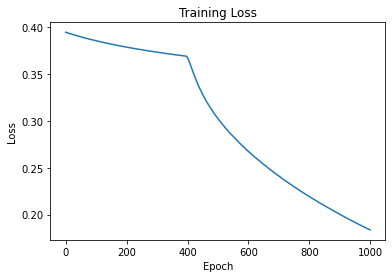

Neural Network Basics#
A Neural Network is a machine learning model inspired by the structure of the human brain. Instead of following explicitly programmed rules, a neural network learns patterns from data.
Neuron#
A single neuron performs three main tasks:
Receive inputs in the form of vectors
Weights the input
Applies an activation function
These neurons are placed in layers. The first layer is the input layer, the last is the output layer, and every layer in between is a hidden layer.
Forward Propagation#
During forward propagation:
Inputs enter the network.
Each neuron computes a weighted sum.
Activation functions generate outputs.
Predictions are produced.
Without activation functions, neural networks behave like linear models. Common activation functions include:
Sigmoid \(\sigma(x) = 1 / (1 + e^{-x})\)
ReLU \( f(x) = \max\{0, x\}\)
Hyperbolic tangent \(\tanh(x)\)
The loss function measures prediction error (how well the model is performing). Common loss functions:
Mean Squared Error (Regression) \(MSE = \frac{1}{n}\sum_{i=1}^{n}(y_i - \hat{y}_i)^2\)
Binary Crossentropy \( L = -\frac{1}{n}\sum_{i=1}^{n}\left[y_i\log(\hat{y}_i)+(1-y_i)\log(1-\hat{y}_i)\right] \)
Categorical Crossentropy \( L =-\sum_{i=1}^{C}y_i\log(\hat{y}_i)\)
Backpropagation#
Backpropagation updates the weights. The process works as follows:
Prediction -> Compute Error -> Compute Gradients -> Update Weights
This process repeats many times during training.
Gradient Descent#
Weights are updated using
new_weight = old_weight - learning_rate × gradient
Learning Rate
Too large = unstable training
Too small = slow learning
# preliminaries
import numpy as np
import tensorflow as tf
from tensorflow import keras
from sklearn.model_selection import train_test_split
from tensorflow.keras.models import Sequential
from tensorflow.keras.layers import Dense
import numpy as np
---------------------------------------------------------------------------
ModuleNotFoundError Traceback (most recent call last)
Cell In[1], line 4
1 # preliminaries
2
3 import numpy as np
----> 4 import tensorflow as tf
5 from tensorflow import keras
6 from sklearn.model_selection import train_test_split
7 from tensorflow.keras.models import Sequential
ModuleNotFoundError: No module named 'tensorflow'
Example Dataset#
X = np.array([
[0,0],
[0,1],
[1,0],
[1,1]
])
y = np.array([0,1,1,2])
Creating a Neural Network#
model = Sequential([
Dense(4, activation="relu", input_shape=(2,)),
Dense(1, activation="sigmoid")
])
Creating the Model#
Explanation
Optimizer: Adam
Loss: Binary Crossentropy
Metric: Accuracy
model.compile(
optimizer="adam",
loss="binary_crossentropy",
metrics=["accuracy"]
)
Training Step#
Training consists of:
Forward propagation
Loss calculation
Backpropagation
Weight updates
model.fit(
X,
y,
epochs=1000,
verbose=1
)
Epoch 1/1000
1/1 [==============================] - 2s 2s/step - loss: 0.6125 - accuracy: 0.5000
Epoch 2/1000
1/1 [==============================] - 0s 13ms/step - loss: 0.6107 - accuracy: 0.5000
Epoch 3/1000
1/1 [==============================] - 0s 17ms/step - loss: 0.6089 - accuracy: 0.5000
Epoch 4/1000
1/1 [==============================] - 0s 16ms/step - loss: 0.6071 - accuracy: 0.5000
Epoch 5/1000
1/1 [==============================] - 0s 14ms/step - loss: 0.6054 - accuracy: 0.5000
Epoch 6/1000
1/1 [==============================] - 0s 14ms/step - loss: 0.6036 - accuracy: 0.5000
Epoch 7/1000
1/1 [==============================] - 0s 16ms/step - loss: 0.6018 - accuracy: 0.5000
Epoch 8/1000
1/1 [==============================] - 0s 17ms/step - loss: 0.6000 - accuracy: 0.5000
Epoch 9/1000
1/1 [==============================] - 0s 37ms/step - loss: 0.5982 - accuracy: 0.5000
Epoch 10/1000
1/1 [==============================] - 0s 16ms/step - loss: 0.5964 - accuracy: 0.5000
Epoch 11/1000
1/1 [==============================] - 0s 16ms/step - loss: 0.5946 - accuracy: 0.5000
Epoch 12/1000
1/1 [==============================] - 0s 12ms/step - loss: 0.5928 - accuracy: 0.5000
Epoch 13/1000
1/1 [==============================] - 0s 18ms/step - loss: 0.5910 - accuracy: 0.5000
Epoch 14/1000
1/1 [==============================] - 0s 23ms/step - loss: 0.5892 - accuracy: 0.5000
Epoch 15/1000
1/1 [==============================] - 0s 16ms/step - loss: 0.5874 - accuracy: 0.5000
Epoch 16/1000
1/1 [==============================] - 0s 21ms/step - loss: 0.5856 - accuracy: 0.5000
Epoch 17/1000
1/1 [==============================] - 0s 24ms/step - loss: 0.5838 - accuracy: 0.5000
Epoch 18/1000
1/1 [==============================] - 0s 21ms/step - loss: 0.5820 - accuracy: 0.5000
Epoch 19/1000
1/1 [==============================] - 0s 23ms/step - loss: 0.5802 - accuracy: 0.5000
Epoch 20/1000
1/1 [==============================] - 0s 19ms/step - loss: 0.5783 - accuracy: 0.5000
Epoch 21/1000
1/1 [==============================] - 0s 17ms/step - loss: 0.5765 - accuracy: 0.5000
Epoch 22/1000
1/1 [==============================] - 0s 16ms/step - loss: 0.5747 - accuracy: 0.5000
Epoch 23/1000
1/1 [==============================] - 0s 16ms/step - loss: 0.5729 - accuracy: 0.5000
Epoch 24/1000
1/1 [==============================] - 0s 21ms/step - loss: 0.5710 - accuracy: 0.5000
Epoch 25/1000
1/1 [==============================] - 0s 18ms/step - loss: 0.5692 - accuracy: 0.5000
Epoch 26/1000
1/1 [==============================] - 0s 19ms/step - loss: 0.5673 - accuracy: 0.5000
Epoch 27/1000
1/1 [==============================] - 0s 18ms/step - loss: 0.5655 - accuracy: 0.5000
Epoch 28/1000
1/1 [==============================] - 0s 17ms/step - loss: 0.5636 - accuracy: 0.5000
Epoch 29/1000
1/1 [==============================] - 0s 18ms/step - loss: 0.5618 - accuracy: 0.5000
Epoch 30/1000
1/1 [==============================] - 0s 16ms/step - loss: 0.5599 - accuracy: 0.5000
Epoch 31/1000
1/1 [==============================] - 0s 20ms/step - loss: 0.5581 - accuracy: 0.5000
Epoch 32/1000
1/1 [==============================] - 0s 17ms/step - loss: 0.5562 - accuracy: 0.5000
Epoch 33/1000
1/1 [==============================] - 0s 20ms/step - loss: 0.5543 - accuracy: 0.5000
Epoch 34/1000
1/1 [==============================] - 0s 14ms/step - loss: 0.5525 - accuracy: 0.5000
Epoch 35/1000
1/1 [==============================] - 0s 21ms/step - loss: 0.5506 - accuracy: 0.5000
Epoch 36/1000
1/1 [==============================] - 0s 22ms/step - loss: 0.5487 - accuracy: 0.5000
Epoch 37/1000
1/1 [==============================] - 0s 25ms/step - loss: 0.5469 - accuracy: 0.5000
Epoch 38/1000
1/1 [==============================] - 0s 22ms/step - loss: 0.5450 - accuracy: 0.5000
Epoch 39/1000
1/1 [==============================] - 0s 13ms/step - loss: 0.5431 - accuracy: 0.5000
Epoch 40/1000
1/1 [==============================] - 0s 24ms/step - loss: 0.5412 - accuracy: 0.5000
Epoch 41/1000
1/1 [==============================] - 0s 16ms/step - loss: 0.5393 - accuracy: 0.5000
Epoch 42/1000
1/1 [==============================] - 0s 15ms/step - loss: 0.5374 - accuracy: 0.5000
Epoch 43/1000
1/1 [==============================] - 0s 16ms/step - loss: 0.5355 - accuracy: 0.5000
Epoch 44/1000
1/1 [==============================] - 0s 18ms/step - loss: 0.5336 - accuracy: 0.5000
Epoch 45/1000
1/1 [==============================] - 0s 16ms/step - loss: 0.5317 - accuracy: 0.5000
Epoch 46/1000
1/1 [==============================] - 0s 12ms/step - loss: 0.5298 - accuracy: 0.5000
Epoch 47/1000
1/1 [==============================] - 0s 19ms/step - loss: 0.5279 - accuracy: 0.5000
Epoch 48/1000
1/1 [==============================] - 0s 20ms/step - loss: 0.5260 - accuracy: 0.5000
Epoch 49/1000
1/1 [==============================] - 0s 15ms/step - loss: 0.5240 - accuracy: 0.5000
Epoch 50/1000
1/1 [==============================] - 0s 17ms/step - loss: 0.5221 - accuracy: 0.5000
Epoch 51/1000
1/1 [==============================] - 0s 21ms/step - loss: 0.5202 - accuracy: 0.5000
Epoch 52/1000
1/1 [==============================] - 0s 19ms/step - loss: 0.5183 - accuracy: 0.5000
Epoch 53/1000
1/1 [==============================] - 0s 18ms/step - loss: 0.5163 - accuracy: 0.5000
Epoch 54/1000
1/1 [==============================] - 0s 12ms/step - loss: 0.5144 - accuracy: 0.5000
Epoch 55/1000
1/1 [==============================] - 0s 12ms/step - loss: 0.5125 - accuracy: 0.5000
Epoch 56/1000
1/1 [==============================] - 0s 16ms/step - loss: 0.5105 - accuracy: 0.5000
Epoch 57/1000
1/1 [==============================] - 0s 17ms/step - loss: 0.5086 - accuracy: 0.5000
Epoch 58/1000
1/1 [==============================] - 0s 11ms/step - loss: 0.5066 - accuracy: 0.5000
Epoch 59/1000
1/1 [==============================] - 0s 13ms/step - loss: 0.5047 - accuracy: 0.5000
Epoch 60/1000
1/1 [==============================] - 0s 19ms/step - loss: 0.5027 - accuracy: 0.5000
Epoch 61/1000
1/1 [==============================] - 0s 12ms/step - loss: 0.5007 - accuracy: 0.5000
Epoch 62/1000
1/1 [==============================] - 0s 10ms/step - loss: 0.4988 - accuracy: 0.5000
Epoch 63/1000
1/1 [==============================] - 0s 30ms/step - loss: 0.4968 - accuracy: 0.5000
Epoch 64/1000
1/1 [==============================] - 0s 19ms/step - loss: 0.4949 - accuracy: 0.5000
Epoch 65/1000
1/1 [==============================] - 0s 28ms/step - loss: 0.4929 - accuracy: 0.5000
Epoch 66/1000
1/1 [==============================] - 0s 16ms/step - loss: 0.4909 - accuracy: 0.5000
Epoch 67/1000
1/1 [==============================] - 0s 17ms/step - loss: 0.4889 - accuracy: 0.5000
Epoch 68/1000
1/1 [==============================] - 0s 15ms/step - loss: 0.4870 - accuracy: 0.5000
Epoch 69/1000
1/1 [==============================] - 0s 12ms/step - loss: 0.4850 - accuracy: 0.5000
Epoch 70/1000
1/1 [==============================] - 0s 12ms/step - loss: 0.4830 - accuracy: 0.5000
Epoch 71/1000
1/1 [==============================] - 0s 16ms/step - loss: 0.4810 - accuracy: 0.5000
Epoch 72/1000
1/1 [==============================] - 0s 19ms/step - loss: 0.4790 - accuracy: 0.5000
Epoch 73/1000
1/1 [==============================] - 0s 18ms/step - loss: 0.4770 - accuracy: 0.5000
Epoch 74/1000
1/1 [==============================] - 0s 19ms/step - loss: 0.4750 - accuracy: 0.5000
Epoch 75/1000
1/1 [==============================] - 0s 14ms/step - loss: 0.4730 - accuracy: 0.5000
Epoch 76/1000
1/1 [==============================] - 0s 19ms/step - loss: 0.4710 - accuracy: 0.5000
Epoch 77/1000
1/1 [==============================] - 0s 16ms/step - loss: 0.4690 - accuracy: 0.5000
Epoch 78/1000
1/1 [==============================] - 0s 9ms/step - loss: 0.4670 - accuracy: 0.5000
Epoch 79/1000
1/1 [==============================] - 0s 15ms/step - loss: 0.4650 - accuracy: 0.5000
Epoch 80/1000
1/1 [==============================] - 0s 17ms/step - loss: 0.4630 - accuracy: 0.5000
Epoch 81/1000
1/1 [==============================] - 0s 18ms/step - loss: 0.4609 - accuracy: 0.5000
Epoch 82/1000
1/1 [==============================] - 0s 22ms/step - loss: 0.4589 - accuracy: 0.5000
Epoch 83/1000
1/1 [==============================] - 0s 13ms/step - loss: 0.4569 - accuracy: 0.5000
Epoch 84/1000
1/1 [==============================] - 0s 17ms/step - loss: 0.4549 - accuracy: 0.5000
Epoch 85/1000
1/1 [==============================] - 0s 15ms/step - loss: 0.4528 - accuracy: 0.5000
Epoch 86/1000
1/1 [==============================] - 0s 12ms/step - loss: 0.4508 - accuracy: 0.5000
Epoch 87/1000
1/1 [==============================] - 0s 15ms/step - loss: 0.4488 - accuracy: 0.5000
Epoch 88/1000
1/1 [==============================] - 0s 13ms/step - loss: 0.4467 - accuracy: 0.5000
Epoch 89/1000
1/1 [==============================] - 0s 13ms/step - loss: 0.4444 - accuracy: 0.5000
Epoch 90/1000
1/1 [==============================] - 0s 22ms/step - loss: 0.4421 - accuracy: 0.5000
Epoch 91/1000
1/1 [==============================] - 0s 17ms/step - loss: 0.4398 - accuracy: 0.5000
Epoch 92/1000
1/1 [==============================] - 0s 16ms/step - loss: 0.4375 - accuracy: 0.5000
Epoch 93/1000
1/1 [==============================] - 0s 16ms/step - loss: 0.4352 - accuracy: 0.5000
Epoch 94/1000
1/1 [==============================] - 0s 17ms/step - loss: 0.4329 - accuracy: 0.5000
Epoch 95/1000
1/1 [==============================] - 0s 17ms/step - loss: 0.4305 - accuracy: 0.5000
Epoch 96/1000
1/1 [==============================] - 0s 19ms/step - loss: 0.4282 - accuracy: 0.5000
Epoch 97/1000
1/1 [==============================] - 0s 21ms/step - loss: 0.4258 - accuracy: 0.5000
Epoch 98/1000
1/1 [==============================] - 0s 22ms/step - loss: 0.4234 - accuracy: 0.5000
Epoch 99/1000
1/1 [==============================] - 0s 14ms/step - loss: 0.4210 - accuracy: 0.5000
Epoch 100/1000
1/1 [==============================] - 0s 20ms/step - loss: 0.4186 - accuracy: 0.5000
Epoch 101/1000
1/1 [==============================] - 0s 12ms/step - loss: 0.4162 - accuracy: 0.5000
Epoch 102/1000
1/1 [==============================] - 0s 18ms/step - loss: 0.4138 - accuracy: 0.5000
Epoch 103/1000
1/1 [==============================] - 0s 20ms/step - loss: 0.4114 - accuracy: 0.5000
Epoch 104/1000
1/1 [==============================] - 0s 41ms/step - loss: 0.4090 - accuracy: 0.5000
Epoch 105/1000
1/1 [==============================] - 0s 14ms/step - loss: 0.4065 - accuracy: 0.5000
Epoch 106/1000
1/1 [==============================] - 0s 10ms/step - loss: 0.4041 - accuracy: 0.5000
Epoch 107/1000
1/1 [==============================] - 0s 9ms/step - loss: 0.4017 - accuracy: 0.5000
Epoch 108/1000
1/1 [==============================] - 0s 13ms/step - loss: 0.3992 - accuracy: 0.5000
Epoch 109/1000
1/1 [==============================] - 0s 16ms/step - loss: 0.3968 - accuracy: 0.5000
Epoch 110/1000
1/1 [==============================] - 0s 9ms/step - loss: 0.3943 - accuracy: 0.5000
Epoch 111/1000
1/1 [==============================] - 0s 15ms/step - loss: 0.3919 - accuracy: 0.5000
Epoch 112/1000
1/1 [==============================] - 0s 17ms/step - loss: 0.3895 - accuracy: 0.5000
Epoch 113/1000
1/1 [==============================] - 0s 25ms/step - loss: 0.3870 - accuracy: 0.5000
Epoch 114/1000
1/1 [==============================] - 0s 10ms/step - loss: 0.3846 - accuracy: 0.5000
Epoch 115/1000
1/1 [==============================] - 0s 17ms/step - loss: 0.3821 - accuracy: 0.5000
Epoch 116/1000
1/1 [==============================] - 0s 14ms/step - loss: 0.3797 - accuracy: 0.5000
Epoch 117/1000
1/1 [==============================] - 0s 15ms/step - loss: 0.3772 - accuracy: 0.5000
Epoch 118/1000
1/1 [==============================] - 0s 16ms/step - loss: 0.3747 - accuracy: 0.5000
Epoch 119/1000
1/1 [==============================] - 0s 27ms/step - loss: 0.3723 - accuracy: 0.5000
Epoch 120/1000
1/1 [==============================] - 0s 10ms/step - loss: 0.3698 - accuracy: 0.5000
Epoch 121/1000
1/1 [==============================] - 0s 17ms/step - loss: 0.3674 - accuracy: 0.5000
Epoch 122/1000
1/1 [==============================] - 0s 5ms/step - loss: 0.3649 - accuracy: 0.5000
Epoch 123/1000
1/1 [==============================] - 0s 17ms/step - loss: 0.3625 - accuracy: 0.5000
Epoch 124/1000
1/1 [==============================] - 0s 17ms/step - loss: 0.3600 - accuracy: 0.5000
Epoch 125/1000
1/1 [==============================] - 0s 18ms/step - loss: 0.3575 - accuracy: 0.5000
Epoch 126/1000
1/1 [==============================] - 0s 18ms/step - loss: 0.3551 - accuracy: 0.5000
Epoch 127/1000
1/1 [==============================] - 0s 11ms/step - loss: 0.3526 - accuracy: 0.5000
Epoch 128/1000
1/1 [==============================] - 0s 10ms/step - loss: 0.3501 - accuracy: 0.5000
Epoch 129/1000
1/1 [==============================] - 0s 9ms/step - loss: 0.3477 - accuracy: 0.5000
Epoch 130/1000
1/1 [==============================] - 0s 20ms/step - loss: 0.3452 - accuracy: 0.5000
Epoch 131/1000
1/1 [==============================] - 0s 8ms/step - loss: 0.3427 - accuracy: 0.5000
Epoch 132/1000
1/1 [==============================] - 0s 14ms/step - loss: 0.3403 - accuracy: 0.5000
Epoch 133/1000
1/1 [==============================] - 0s 10ms/step - loss: 0.3378 - accuracy: 0.5000
Epoch 134/1000
1/1 [==============================] - 0s 19ms/step - loss: 0.3353 - accuracy: 0.5000
Epoch 135/1000
1/1 [==============================] - 0s 12ms/step - loss: 0.3329 - accuracy: 0.5000
Epoch 136/1000
1/1 [==============================] - 0s 14ms/step - loss: 0.3304 - accuracy: 0.5000
Epoch 137/1000
1/1 [==============================] - 0s 23ms/step - loss: 0.3279 - accuracy: 0.5000
Epoch 138/1000
1/1 [==============================] - 0s 17ms/step - loss: 0.3255 - accuracy: 0.5000
Epoch 139/1000
1/1 [==============================] - 0s 14ms/step - loss: 0.3230 - accuracy: 0.5000
Epoch 140/1000
1/1 [==============================] - 0s 14ms/step - loss: 0.3205 - accuracy: 0.5000
Epoch 141/1000
1/1 [==============================] - 0s 16ms/step - loss: 0.3181 - accuracy: 0.5000
Epoch 142/1000
1/1 [==============================] - 0s 17ms/step - loss: 0.3156 - accuracy: 0.5000
Epoch 143/1000
1/1 [==============================] - 0s 16ms/step - loss: 0.3131 - accuracy: 0.5000
Epoch 144/1000
1/1 [==============================] - 0s 13ms/step - loss: 0.3106 - accuracy: 0.5000
Epoch 145/1000
1/1 [==============================] - 0s 17ms/step - loss: 0.3082 - accuracy: 0.5000
Epoch 146/1000
1/1 [==============================] - 0s 16ms/step - loss: 0.3057 - accuracy: 0.5000
Epoch 147/1000
1/1 [==============================] - 0s 13ms/step - loss: 0.3032 - accuracy: 0.5000
Epoch 148/1000
1/1 [==============================] - 0s 20ms/step - loss: 0.3008 - accuracy: 0.5000
Epoch 149/1000
1/1 [==============================] - 0s 16ms/step - loss: 0.2983 - accuracy: 0.5000
Epoch 150/1000
1/1 [==============================] - 0s 11ms/step - loss: 0.2958 - accuracy: 0.5000
Epoch 151/1000
1/1 [==============================] - 0s 10ms/step - loss: 0.2933 - accuracy: 0.5000
Epoch 152/1000
1/1 [==============================] - 0s 15ms/step - loss: 0.2909 - accuracy: 0.5000
Epoch 153/1000
1/1 [==============================] - 0s 20ms/step - loss: 0.2884 - accuracy: 0.5000
Epoch 154/1000
1/1 [==============================] - 0s 14ms/step - loss: 0.2859 - accuracy: 0.5000
Epoch 155/1000
1/1 [==============================] - 0s 22ms/step - loss: 0.2835 - accuracy: 0.5000
Epoch 156/1000
1/1 [==============================] - 0s 11ms/step - loss: 0.2810 - accuracy: 0.5000
Epoch 157/1000
1/1 [==============================] - 0s 13ms/step - loss: 0.2785 - accuracy: 0.5000
Epoch 158/1000
1/1 [==============================] - 0s 18ms/step - loss: 0.2760 - accuracy: 0.5000
Epoch 159/1000
1/1 [==============================] - 0s 12ms/step - loss: 0.2736 - accuracy: 0.5000
Epoch 160/1000
1/1 [==============================] - 0s 15ms/step - loss: 0.2711 - accuracy: 0.5000
Epoch 161/1000
1/1 [==============================] - 0s 15ms/step - loss: 0.2686 - accuracy: 0.5000
Epoch 162/1000
1/1 [==============================] - 0s 14ms/step - loss: 0.2661 - accuracy: 0.5000
Epoch 163/1000
1/1 [==============================] - 0s 20ms/step - loss: 0.2637 - accuracy: 0.5000
Epoch 164/1000
1/1 [==============================] - 0s 8ms/step - loss: 0.2612 - accuracy: 0.5000
Epoch 165/1000
1/1 [==============================] - 0s 16ms/step - loss: 0.2587 - accuracy: 0.5000
Epoch 166/1000
1/1 [==============================] - 0s 16ms/step - loss: 0.2563 - accuracy: 0.5000
Epoch 167/1000
1/1 [==============================] - 0s 14ms/step - loss: 0.2538 - accuracy: 0.5000
Epoch 168/1000
1/1 [==============================] - 0s 17ms/step - loss: 0.2513 - accuracy: 0.5000
Epoch 169/1000
1/1 [==============================] - 0s 16ms/step - loss: 0.2488 - accuracy: 0.5000
Epoch 170/1000
1/1 [==============================] - 0s 13ms/step - loss: 0.2464 - accuracy: 0.5000
Epoch 171/1000
1/1 [==============================] - 0s 8ms/step - loss: 0.2439 - accuracy: 0.5000
Epoch 172/1000
1/1 [==============================] - 0s 15ms/step - loss: 0.2414 - accuracy: 0.5000
Epoch 173/1000
1/1 [==============================] - 0s 12ms/step - loss: 0.2390 - accuracy: 0.5000
Epoch 174/1000
1/1 [==============================] - 0s 39ms/step - loss: 0.2365 - accuracy: 0.5000
Epoch 175/1000
1/1 [==============================] - 0s 13ms/step - loss: 0.2340 - accuracy: 0.5000
Epoch 176/1000
1/1 [==============================] - 0s 16ms/step - loss: 0.2315 - accuracy: 0.5000
Epoch 177/1000
1/1 [==============================] - 0s 19ms/step - loss: 0.2291 - accuracy: 0.5000
Epoch 178/1000
1/1 [==============================] - 0s 12ms/step - loss: 0.2266 - accuracy: 0.5000
Epoch 179/1000
1/1 [==============================] - 0s 16ms/step - loss: 0.2241 - accuracy: 0.5000
Epoch 180/1000
1/1 [==============================] - 0s 9ms/step - loss: 0.2217 - accuracy: 0.5000
Epoch 181/1000
1/1 [==============================] - 0s 15ms/step - loss: 0.2192 - accuracy: 0.5000
Epoch 182/1000
1/1 [==============================] - 0s 16ms/step - loss: 0.2167 - accuracy: 0.5000
Epoch 183/1000
1/1 [==============================] - 0s 13ms/step - loss: 0.2143 - accuracy: 0.5000
Epoch 184/1000
1/1 [==============================] - 0s 17ms/step - loss: 0.2118 - accuracy: 0.5000
Epoch 185/1000
1/1 [==============================] - 0s 16ms/step - loss: 0.2093 - accuracy: 0.5000
Epoch 186/1000
1/1 [==============================] - 0s 13ms/step - loss: 0.2068 - accuracy: 0.5000
Epoch 187/1000
1/1 [==============================] - 0s 19ms/step - loss: 0.2044 - accuracy: 0.5000
Epoch 188/1000
1/1 [==============================] - 0s 8ms/step - loss: 0.2019 - accuracy: 0.5000
Epoch 189/1000
1/1 [==============================] - 0s 16ms/step - loss: 0.1994 - accuracy: 0.5000
Epoch 190/1000
1/1 [==============================] - 0s 16ms/step - loss: 0.1970 - accuracy: 0.5000
Epoch 191/1000
1/1 [==============================] - 0s 16ms/step - loss: 0.1945 - accuracy: 0.5000
Epoch 192/1000
1/1 [==============================] - 0s 12ms/step - loss: 0.1920 - accuracy: 0.5000
Epoch 193/1000
1/1 [==============================] - 0s 17ms/step - loss: 0.1896 - accuracy: 0.5000
Epoch 194/1000
1/1 [==============================] - 0s 11ms/step - loss: 0.1871 - accuracy: 0.5000
Epoch 195/1000
1/1 [==============================] - 0s 13ms/step - loss: 0.1847 - accuracy: 0.5000
Epoch 196/1000
1/1 [==============================] - 0s 22ms/step - loss: 0.1822 - accuracy: 0.5000
Epoch 197/1000
1/1 [==============================] - 0s 16ms/step - loss: 0.1797 - accuracy: 0.5000
Epoch 198/1000
1/1 [==============================] - 0s 10ms/step - loss: 0.1773 - accuracy: 0.5000
Epoch 199/1000
1/1 [==============================] - 0s 13ms/step - loss: 0.1748 - accuracy: 0.5000
Epoch 200/1000
1/1 [==============================] - 0s 7ms/step - loss: 0.1723 - accuracy: 0.5000
Epoch 201/1000
1/1 [==============================] - 0s 9ms/step - loss: 0.1699 - accuracy: 0.5000
Epoch 202/1000
1/1 [==============================] - 0s 15ms/step - loss: 0.1674 - accuracy: 0.5000
Epoch 203/1000
1/1 [==============================] - 0s 14ms/step - loss: 0.1650 - accuracy: 0.5000
Epoch 204/1000
1/1 [==============================] - 0s 17ms/step - loss: 0.1625 - accuracy: 0.5000
Epoch 205/1000
1/1 [==============================] - 0s 17ms/step - loss: 0.1600 - accuracy: 0.5000
Epoch 206/1000
1/1 [==============================] - 0s 9ms/step - loss: 0.1576 - accuracy: 0.5000
Epoch 207/1000
1/1 [==============================] - 0s 16ms/step - loss: 0.1551 - accuracy: 0.5000
Epoch 208/1000
1/1 [==============================] - 0s 19ms/step - loss: 0.1527 - accuracy: 0.5000
Epoch 209/1000
1/1 [==============================] - 0s 19ms/step - loss: 0.1502 - accuracy: 0.5000
Epoch 210/1000
1/1 [==============================] - 0s 17ms/step - loss: 0.1478 - accuracy: 0.5000
Epoch 211/1000
1/1 [==============================] - 0s 15ms/step - loss: 0.1453 - accuracy: 0.5000
Epoch 212/1000
1/1 [==============================] - 0s 17ms/step - loss: 0.1428 - accuracy: 0.5000
Epoch 213/1000
1/1 [==============================] - 0s 11ms/step - loss: 0.1404 - accuracy: 0.5000
Epoch 214/1000
1/1 [==============================] - 0s 17ms/step - loss: 0.1379 - accuracy: 0.5000
Epoch 215/1000
1/1 [==============================] - 0s 17ms/step - loss: 0.1355 - accuracy: 0.5000
Epoch 216/1000
1/1 [==============================] - 0s 12ms/step - loss: 0.1330 - accuracy: 0.5000
Epoch 217/1000
1/1 [==============================] - 0s 16ms/step - loss: 0.1306 - accuracy: 0.5000
Epoch 218/1000
1/1 [==============================] - 0s 29ms/step - loss: 0.1281 - accuracy: 0.5000
Epoch 219/1000
1/1 [==============================] - 0s 16ms/step - loss: 0.1257 - accuracy: 0.5000
Epoch 220/1000
1/1 [==============================] - 0s 9ms/step - loss: 0.1232 - accuracy: 0.5000
Epoch 221/1000
1/1 [==============================] - 0s 8ms/step - loss: 0.1208 - accuracy: 0.5000
Epoch 222/1000
1/1 [==============================] - 0s 17ms/step - loss: 0.1183 - accuracy: 0.5000
Epoch 223/1000
1/1 [==============================] - 0s 14ms/step - loss: 0.1159 - accuracy: 0.5000
Epoch 224/1000
1/1 [==============================] - 0s 19ms/step - loss: 0.1135 - accuracy: 0.5000
Epoch 225/1000
1/1 [==============================] - 0s 13ms/step - loss: 0.1110 - accuracy: 0.5000
Epoch 226/1000
1/1 [==============================] - 0s 17ms/step - loss: 0.1086 - accuracy: 0.5000
Epoch 227/1000
1/1 [==============================] - 0s 13ms/step - loss: 0.1061 - accuracy: 0.5000
Epoch 228/1000
1/1 [==============================] - 0s 9ms/step - loss: 0.1037 - accuracy: 0.5000
Epoch 229/1000
1/1 [==============================] - 0s 19ms/step - loss: 0.1012 - accuracy: 0.5000
Epoch 230/1000
1/1 [==============================] - 0s 10ms/step - loss: 0.0988 - accuracy: 0.5000
Epoch 231/1000
1/1 [==============================] - 0s 17ms/step - loss: 0.0964 - accuracy: 0.5000
Epoch 232/1000
1/1 [==============================] - 0s 18ms/step - loss: 0.0939 - accuracy: 0.5000
Epoch 233/1000
1/1 [==============================] - 0s 19ms/step - loss: 0.0915 - accuracy: 0.5000
Epoch 234/1000
1/1 [==============================] - 0s 10ms/step - loss: 0.0890 - accuracy: 0.5000
Epoch 235/1000
1/1 [==============================] - 0s 17ms/step - loss: 0.0864 - accuracy: 0.5000
Epoch 236/1000
1/1 [==============================] - 0s 9ms/step - loss: 0.0839 - accuracy: 0.5000
Epoch 237/1000
1/1 [==============================] - 0s 16ms/step - loss: 0.0813 - accuracy: 0.5000
Epoch 238/1000
1/1 [==============================] - 0s 16ms/step - loss: 0.0788 - accuracy: 0.5000
Epoch 239/1000
1/1 [==============================] - 0s 15ms/step - loss: 0.0762 - accuracy: 0.5000
Epoch 240/1000
1/1 [==============================] - 0s 12ms/step - loss: 0.0736 - accuracy: 0.5000
Epoch 241/1000
1/1 [==============================] - 0s 13ms/step - loss: 0.0711 - accuracy: 0.5000
Epoch 242/1000
1/1 [==============================] - 0s 22ms/step - loss: 0.0685 - accuracy: 0.5000
Epoch 243/1000
1/1 [==============================] - 0s 15ms/step - loss: 0.0659 - accuracy: 0.5000
Epoch 244/1000
1/1 [==============================] - 0s 16ms/step - loss: 0.0633 - accuracy: 0.5000
Epoch 245/1000
1/1 [==============================] - 0s 17ms/step - loss: 0.0607 - accuracy: 0.5000
Epoch 246/1000
1/1 [==============================] - 0s 9ms/step - loss: 0.0581 - accuracy: 0.5000
Epoch 247/1000
1/1 [==============================] - 0s 16ms/step - loss: 0.0555 - accuracy: 0.5000
Epoch 248/1000
1/1 [==============================] - 0s 17ms/step - loss: 0.0529 - accuracy: 0.5000
Epoch 249/1000
1/1 [==============================] - 0s 19ms/step - loss: 0.0503 - accuracy: 0.5000
Epoch 250/1000
1/1 [==============================] - 0s 16ms/step - loss: 0.0478 - accuracy: 0.5000
Epoch 251/1000
1/1 [==============================] - 0s 8ms/step - loss: 0.0452 - accuracy: 0.5000
Epoch 252/1000
1/1 [==============================] - 0s 18ms/step - loss: 0.0426 - accuracy: 0.5000
Epoch 253/1000
1/1 [==============================] - 0s 15ms/step - loss: 0.0400 - accuracy: 0.5000
Epoch 254/1000
1/1 [==============================] - 0s 15ms/step - loss: 0.0374 - accuracy: 0.5000
Epoch 255/1000
1/1 [==============================] - 0s 14ms/step - loss: 0.0348 - accuracy: 0.5000
Epoch 256/1000
1/1 [==============================] - 0s 15ms/step - loss: 0.0322 - accuracy: 0.5000
Epoch 257/1000
1/1 [==============================] - 0s 11ms/step - loss: 0.0296 - accuracy: 0.5000
Epoch 258/1000
1/1 [==============================] - 0s 18ms/step - loss: 0.0270 - accuracy: 0.5000
Epoch 259/1000
1/1 [==============================] - 0s 21ms/step - loss: 0.0244 - accuracy: 0.5000
Epoch 260/1000
1/1 [==============================] - 0s 10ms/step - loss: 0.0218 - accuracy: 0.5000
Epoch 261/1000
1/1 [==============================] - 0s 18ms/step - loss: 0.0192 - accuracy: 0.5000
Epoch 262/1000
1/1 [==============================] - 0s 21ms/step - loss: 0.0166 - accuracy: 0.5000
Epoch 263/1000
1/1 [==============================] - 0s 17ms/step - loss: 0.0141 - accuracy: 0.5000
Epoch 264/1000
1/1 [==============================] - 0s 14ms/step - loss: 0.0115 - accuracy: 0.5000
Epoch 265/1000
1/1 [==============================] - 0s 23ms/step - loss: 0.0089 - accuracy: 0.5000
Epoch 266/1000
1/1 [==============================] - 0s 16ms/step - loss: 0.0063 - accuracy: 0.5000
Epoch 267/1000
1/1 [==============================] - 0s 19ms/step - loss: 0.0037 - accuracy: 0.5000
Epoch 268/1000
1/1 [==============================] - 0s 13ms/step - loss: 0.0011 - accuracy: 0.5000
Epoch 269/1000
1/1 [==============================] - 0s 17ms/step - loss: -0.0014 - accuracy: 0.5000
Epoch 270/1000
1/1 [==============================] - 0s 4ms/step - loss: -0.0040 - accuracy: 0.5000
Epoch 271/1000
1/1 [==============================] - 0s 20ms/step - loss: -0.0066 - accuracy: 0.5000
Epoch 272/1000
1/1 [==============================] - 0s 9ms/step - loss: -0.0092 - accuracy: 0.5000
Epoch 273/1000
1/1 [==============================] - 0s 10ms/step - loss: -0.0117 - accuracy: 0.5000
Epoch 274/1000
1/1 [==============================] - 0s 10ms/step - loss: -0.0143 - accuracy: 0.5000
Epoch 275/1000
1/1 [==============================] - 0s 6ms/step - loss: -0.0169 - accuracy: 0.5000
Epoch 276/1000
1/1 [==============================] - 0s 13ms/step - loss: -0.0194 - accuracy: 0.5000
Epoch 277/1000
1/1 [==============================] - 0s 14ms/step - loss: -0.0220 - accuracy: 0.5000
Epoch 278/1000
1/1 [==============================] - 0s 16ms/step - loss: -0.0246 - accuracy: 0.5000
Epoch 279/1000
1/1 [==============================] - 0s 19ms/step - loss: -0.0271 - accuracy: 0.5000
Epoch 280/1000
1/1 [==============================] - 0s 11ms/step - loss: -0.0297 - accuracy: 0.5000
Epoch 281/1000
1/1 [==============================] - 0s 21ms/step - loss: -0.0323 - accuracy: 0.5000
Epoch 282/1000
1/1 [==============================] - 0s 15ms/step - loss: -0.0348 - accuracy: 0.5000
Epoch 283/1000
1/1 [==============================] - 0s 17ms/step - loss: -0.0374 - accuracy: 0.5000
Epoch 284/1000
1/1 [==============================] - 0s 19ms/step - loss: -0.0399 - accuracy: 0.5000
Epoch 285/1000
1/1 [==============================] - 0s 15ms/step - loss: -0.0425 - accuracy: 0.5000
Epoch 286/1000
1/1 [==============================] - 0s 17ms/step - loss: -0.0450 - accuracy: 0.5000
Epoch 287/1000
1/1 [==============================] - 0s 18ms/step - loss: -0.0476 - accuracy: 0.5000
Epoch 288/1000
1/1 [==============================] - 0s 9ms/step - loss: -0.0501 - accuracy: 0.5000
Epoch 289/1000
1/1 [==============================] - 0s 15ms/step - loss: -0.0527 - accuracy: 0.5000
Epoch 290/1000
1/1 [==============================] - 0s 10ms/step - loss: -0.0552 - accuracy: 0.5000
Epoch 291/1000
1/1 [==============================] - 0s 40ms/step - loss: -0.0578 - accuracy: 0.5000
Epoch 292/1000
1/1 [==============================] - 0s 15ms/step - loss: -0.0603 - accuracy: 0.5000
Epoch 293/1000
1/1 [==============================] - 0s 14ms/step - loss: -0.0629 - accuracy: 0.5000
Epoch 294/1000
1/1 [==============================] - 0s 13ms/step - loss: -0.0654 - accuracy: 0.5000
Epoch 295/1000
1/1 [==============================] - 0s 16ms/step - loss: -0.0679 - accuracy: 0.5000
Epoch 296/1000
1/1 [==============================] - 0s 16ms/step - loss: -0.0705 - accuracy: 0.5000
Epoch 297/1000
1/1 [==============================] - 0s 11ms/step - loss: -0.0730 - accuracy: 0.5000
Epoch 298/1000
1/1 [==============================] - 0s 17ms/step - loss: -0.0756 - accuracy: 0.5000
Epoch 299/1000
1/1 [==============================] - 0s 12ms/step - loss: -0.0781 - accuracy: 0.5000
Epoch 300/1000
1/1 [==============================] - 0s 14ms/step - loss: -0.0806 - accuracy: 0.5000
Epoch 301/1000
1/1 [==============================] - 0s 15ms/step - loss: -0.0831 - accuracy: 0.5000
Epoch 302/1000
1/1 [==============================] - 0s 17ms/step - loss: -0.0857 - accuracy: 0.5000
Epoch 303/1000
1/1 [==============================] - 0s 8ms/step - loss: -0.0882 - accuracy: 0.5000
Epoch 304/1000
1/1 [==============================] - 0s 14ms/step - loss: -0.0907 - accuracy: 0.5000
Epoch 305/1000
1/1 [==============================] - 0s 16ms/step - loss: -0.0933 - accuracy: 0.5000
Epoch 306/1000
1/1 [==============================] - 0s 17ms/step - loss: -0.0958 - accuracy: 0.5000
Epoch 307/1000
1/1 [==============================] - 0s 17ms/step - loss: -0.0983 - accuracy: 0.5000
Epoch 308/1000
1/1 [==============================] - 0s 14ms/step - loss: -0.1008 - accuracy: 0.5000
Epoch 309/1000
1/1 [==============================] - 0s 17ms/step - loss: -0.1033 - accuracy: 0.5000
Epoch 310/1000
1/1 [==============================] - 0s 17ms/step - loss: -0.1058 - accuracy: 0.5000
Epoch 311/1000
1/1 [==============================] - 0s 19ms/step - loss: -0.1084 - accuracy: 0.5000
Epoch 312/1000
1/1 [==============================] - 0s 19ms/step - loss: -0.1109 - accuracy: 0.5000
Epoch 313/1000
1/1 [==============================] - 0s 29ms/step - loss: -0.1134 - accuracy: 0.5000
Epoch 314/1000
1/1 [==============================] - 0s 17ms/step - loss: -0.1159 - accuracy: 0.5000
Epoch 315/1000
1/1 [==============================] - 0s 15ms/step - loss: -0.1184 - accuracy: 0.5000
Epoch 316/1000
1/1 [==============================] - 0s 14ms/step - loss: -0.1209 - accuracy: 0.5000
Epoch 317/1000
1/1 [==============================] - 0s 17ms/step - loss: -0.1234 - accuracy: 0.5000
Epoch 318/1000
1/1 [==============================] - 0s 15ms/step - loss: -0.1259 - accuracy: 0.5000
Epoch 319/1000
1/1 [==============================] - 0s 11ms/step - loss: -0.1284 - accuracy: 0.5000
Epoch 320/1000
1/1 [==============================] - 0s 16ms/step - loss: -0.1309 - accuracy: 0.5000
Epoch 321/1000
1/1 [==============================] - 0s 15ms/step - loss: -0.1334 - accuracy: 0.5000
Epoch 322/1000
1/1 [==============================] - 0s 17ms/step - loss: -0.1359 - accuracy: 0.5000
Epoch 323/1000
1/1 [==============================] - 0s 15ms/step - loss: -0.1384 - accuracy: 0.5000
Epoch 324/1000
1/1 [==============================] - 0s 14ms/step - loss: -0.1409 - accuracy: 0.5000
Epoch 325/1000
1/1 [==============================] - 0s 11ms/step - loss: -0.1434 - accuracy: 0.5000
Epoch 326/1000
1/1 [==============================] - 0s 13ms/step - loss: -0.1459 - accuracy: 0.5000
Epoch 327/1000
1/1 [==============================] - 0s 24ms/step - loss: -0.1484 - accuracy: 0.5000
Epoch 328/1000
1/1 [==============================] - 0s 15ms/step - loss: -0.1509 - accuracy: 0.5000
Epoch 329/1000
1/1 [==============================] - 0s 17ms/step - loss: -0.1534 - accuracy: 0.5000
Epoch 330/1000
1/1 [==============================] - 0s 15ms/step - loss: -0.1559 - accuracy: 0.5000
Epoch 331/1000
1/1 [==============================] - 0s 20ms/step - loss: -0.1584 - accuracy: 0.5000
Epoch 332/1000
1/1 [==============================] - 0s 10ms/step - loss: -0.1609 - accuracy: 0.5000
Epoch 333/1000
1/1 [==============================] - 0s 18ms/step - loss: -0.1633 - accuracy: 0.5000
Epoch 334/1000
1/1 [==============================] - 0s 12ms/step - loss: -0.1658 - accuracy: 0.5000
Epoch 335/1000
1/1 [==============================] - 0s 10ms/step - loss: -0.1683 - accuracy: 0.5000
Epoch 336/1000
1/1 [==============================] - 0s 16ms/step - loss: -0.1708 - accuracy: 0.5000
Epoch 337/1000
1/1 [==============================] - 0s 9ms/step - loss: -0.1733 - accuracy: 0.5000
Epoch 338/1000
1/1 [==============================] - 0s 15ms/step - loss: -0.1758 - accuracy: 0.5000
Epoch 339/1000
1/1 [==============================] - 0s 16ms/step - loss: -0.1782 - accuracy: 0.5000
Epoch 340/1000
1/1 [==============================] - 0s 19ms/step - loss: -0.1807 - accuracy: 0.5000
Epoch 341/1000
1/1 [==============================] - 0s 13ms/step - loss: -0.1832 - accuracy: 0.5000
Epoch 342/1000
1/1 [==============================] - 0s 14ms/step - loss: -0.1857 - accuracy: 0.5000
Epoch 343/1000
1/1 [==============================] - 0s 17ms/step - loss: -0.1881 - accuracy: 0.5000
Epoch 344/1000
1/1 [==============================] - 0s 13ms/step - loss: -0.1906 - accuracy: 0.5000
Epoch 345/1000
1/1 [==============================] - 0s 17ms/step - loss: -0.1931 - accuracy: 0.5000
Epoch 346/1000
1/1 [==============================] - 0s 14ms/step - loss: -0.1956 - accuracy: 0.5000
Epoch 347/1000
1/1 [==============================] - 0s 11ms/step - loss: -0.1980 - accuracy: 0.5000
Epoch 348/1000
1/1 [==============================] - 0s 20ms/step - loss: -0.2005 - accuracy: 0.5000
Epoch 349/1000
1/1 [==============================] - 0s 16ms/step - loss: -0.2030 - accuracy: 0.5000
Epoch 350/1000
1/1 [==============================] - 0s 19ms/step - loss: -0.2054 - accuracy: 0.5000
Epoch 351/1000
1/1 [==============================] - 0s 13ms/step - loss: -0.2079 - accuracy: 0.5000
Epoch 352/1000
1/1 [==============================] - 0s 13ms/step - loss: -0.2104 - accuracy: 0.5000
Epoch 353/1000
1/1 [==============================] - 0s 15ms/step - loss: -0.2128 - accuracy: 0.5000
Epoch 354/1000
1/1 [==============================] - 0s 13ms/step - loss: -0.2153 - accuracy: 0.5000
Epoch 355/1000
1/1 [==============================] - 0s 12ms/step - loss: -0.2178 - accuracy: 0.5000
Epoch 356/1000
1/1 [==============================] - 0s 16ms/step - loss: -0.2202 - accuracy: 0.5000
Epoch 357/1000
1/1 [==============================] - 0s 21ms/step - loss: -0.2227 - accuracy: 0.5000
Epoch 358/1000
1/1 [==============================] - 0s 12ms/step - loss: -0.2251 - accuracy: 0.5000
Epoch 359/1000
1/1 [==============================] - 0s 7ms/step - loss: -0.2276 - accuracy: 0.5000
Epoch 360/1000
1/1 [==============================] - 0s 17ms/step - loss: -0.2300 - accuracy: 0.5000
Epoch 361/1000
1/1 [==============================] - 0s 15ms/step - loss: -0.2325 - accuracy: 0.5000
Epoch 362/1000
1/1 [==============================] - 0s 21ms/step - loss: -0.2350 - accuracy: 0.5000
Epoch 363/1000
1/1 [==============================] - 0s 15ms/step - loss: -0.2374 - accuracy: 0.5000
Epoch 364/1000
1/1 [==============================] - 0s 9ms/step - loss: -0.2399 - accuracy: 0.5000
Epoch 365/1000
1/1 [==============================] - 0s 16ms/step - loss: -0.2423 - accuracy: 0.5000
Epoch 366/1000
1/1 [==============================] - 0s 11ms/step - loss: -0.2448 - accuracy: 0.5000
Epoch 367/1000
1/1 [==============================] - 0s 14ms/step - loss: -0.2472 - accuracy: 0.5000
Epoch 368/1000
1/1 [==============================] - 0s 11ms/step - loss: -0.2497 - accuracy: 0.5000
Epoch 369/1000
1/1 [==============================] - 0s 14ms/step - loss: -0.2521 - accuracy: 0.5000
Epoch 370/1000
1/1 [==============================] - 0s 13ms/step - loss: -0.2546 - accuracy: 0.5000
Epoch 371/1000
1/1 [==============================] - 0s 15ms/step - loss: -0.2570 - accuracy: 0.5000
Epoch 372/1000
1/1 [==============================] - 0s 16ms/step - loss: -0.2595 - accuracy: 0.5000
Epoch 373/1000
1/1 [==============================] - 0s 17ms/step - loss: -0.2619 - accuracy: 0.5000
Epoch 374/1000
1/1 [==============================] - 0s 16ms/step - loss: -0.2644 - accuracy: 0.5000
Epoch 375/1000
1/1 [==============================] - 0s 19ms/step - loss: -0.2668 - accuracy: 0.5000
Epoch 376/1000
1/1 [==============================] - 0s 19ms/step - loss: -0.2693 - accuracy: 0.5000
Epoch 377/1000
1/1 [==============================] - 0s 16ms/step - loss: -0.2717 - accuracy: 0.5000
Epoch 378/1000
1/1 [==============================] - 0s 19ms/step - loss: -0.2742 - accuracy: 0.5000
Epoch 379/1000
1/1 [==============================] - 0s 17ms/step - loss: -0.2766 - accuracy: 0.5000
Epoch 380/1000
1/1 [==============================] - 0s 18ms/step - loss: -0.2790 - accuracy: 0.5000
Epoch 381/1000
1/1 [==============================] - 0s 13ms/step - loss: -0.2815 - accuracy: 0.5000
Epoch 382/1000
1/1 [==============================] - 0s 9ms/step - loss: -0.2839 - accuracy: 0.5000
Epoch 383/1000
1/1 [==============================] - 0s 19ms/step - loss: -0.2864 - accuracy: 0.5000
Epoch 384/1000
1/1 [==============================] - 0s 14ms/step - loss: -0.2888 - accuracy: 0.5000
Epoch 385/1000
1/1 [==============================] - 0s 15ms/step - loss: -0.2912 - accuracy: 0.5000
Epoch 386/1000
1/1 [==============================] - 0s 17ms/step - loss: -0.2937 - accuracy: 0.5000
Epoch 387/1000
1/1 [==============================] - 0s 20ms/step - loss: -0.2961 - accuracy: 0.5000
Epoch 388/1000
1/1 [==============================] - 0s 14ms/step - loss: -0.2986 - accuracy: 0.5000
Epoch 389/1000
1/1 [==============================] - 0s 9ms/step - loss: -0.3010 - accuracy: 0.5000
Epoch 390/1000
1/1 [==============================] - 0s 19ms/step - loss: -0.3034 - accuracy: 0.5000
Epoch 391/1000
1/1 [==============================] - 0s 27ms/step - loss: -0.3059 - accuracy: 0.5000
Epoch 392/1000
1/1 [==============================] - 0s 16ms/step - loss: -0.3083 - accuracy: 0.5000
Epoch 393/1000
1/1 [==============================] - 0s 10ms/step - loss: -0.3107 - accuracy: 0.5000
Epoch 394/1000
1/1 [==============================] - 0s 10ms/step - loss: -0.3132 - accuracy: 0.5000
Epoch 395/1000
1/1 [==============================] - 0s 12ms/step - loss: -0.3156 - accuracy: 0.5000
Epoch 396/1000
1/1 [==============================] - 0s 12ms/step - loss: -0.3181 - accuracy: 0.5000
Epoch 397/1000
1/1 [==============================] - 0s 9ms/step - loss: -0.3205 - accuracy: 0.5000
Epoch 398/1000
1/1 [==============================] - 0s 15ms/step - loss: -0.3229 - accuracy: 0.5000
Epoch 399/1000
1/1 [==============================] - 0s 15ms/step - loss: -0.3254 - accuracy: 0.5000
Epoch 400/1000
1/1 [==============================] - 0s 19ms/step - loss: -0.3278 - accuracy: 0.5000
Epoch 401/1000
1/1 [==============================] - 0s 13ms/step - loss: -0.3302 - accuracy: 0.5000
Epoch 402/1000
1/1 [==============================] - 0s 19ms/step - loss: -0.3327 - accuracy: 0.5000
Epoch 403/1000
1/1 [==============================] - 0s 14ms/step - loss: -0.3351 - accuracy: 0.5000
Epoch 404/1000
1/1 [==============================] - 0s 13ms/step - loss: -0.3375 - accuracy: 0.5000
Epoch 405/1000
1/1 [==============================] - 0s 11ms/step - loss: -0.3400 - accuracy: 0.5000
Epoch 406/1000
1/1 [==============================] - 0s 11ms/step - loss: -0.3424 - accuracy: 0.5000
Epoch 407/1000
1/1 [==============================] - 0s 16ms/step - loss: -0.3448 - accuracy: 0.5000
Epoch 408/1000
1/1 [==============================] - 0s 13ms/step - loss: -0.3473 - accuracy: 0.5000
Epoch 409/1000
1/1 [==============================] - 0s 16ms/step - loss: -0.3497 - accuracy: 0.5000
Epoch 410/1000
1/1 [==============================] - 0s 10ms/step - loss: -0.3521 - accuracy: 0.5000
Epoch 411/1000
1/1 [==============================] - 0s 15ms/step - loss: -0.3546 - accuracy: 0.5000
Epoch 412/1000
1/1 [==============================] - 0s 14ms/step - loss: -0.3570 - accuracy: 0.5000
Epoch 413/1000
1/1 [==============================] - 0s 14ms/step - loss: -0.3594 - accuracy: 0.5000
Epoch 414/1000
1/1 [==============================] - 0s 19ms/step - loss: -0.3618 - accuracy: 0.5000
Epoch 415/1000
1/1 [==============================] - 0s 22ms/step - loss: -0.3643 - accuracy: 0.5000
Epoch 416/1000
1/1 [==============================] - 0s 16ms/step - loss: -0.3667 - accuracy: 0.5000
Epoch 417/1000
1/1 [==============================] - 0s 16ms/step - loss: -0.3691 - accuracy: 0.5000
Epoch 418/1000
1/1 [==============================] - 0s 22ms/step - loss: -0.3716 - accuracy: 0.5000
Epoch 419/1000
1/1 [==============================] - 0s 13ms/step - loss: -0.3740 - accuracy: 0.5000
Epoch 420/1000
1/1 [==============================] - 0s 15ms/step - loss: -0.3764 - accuracy: 0.5000
Epoch 421/1000
1/1 [==============================] - 0s 18ms/step - loss: -0.3789 - accuracy: 0.5000
Epoch 422/1000
1/1 [==============================] - 0s 21ms/step - loss: -0.3813 - accuracy: 0.5000
Epoch 423/1000
1/1 [==============================] - 0s 10ms/step - loss: -0.3837 - accuracy: 0.5000
Epoch 424/1000
1/1 [==============================] - 0s 11ms/step - loss: -0.3862 - accuracy: 0.5000
Epoch 425/1000
1/1 [==============================] - 0s 12ms/step - loss: -0.3886 - accuracy: 0.5000
Epoch 426/1000
1/1 [==============================] - 0s 15ms/step - loss: -0.3910 - accuracy: 0.5000
Epoch 427/1000
1/1 [==============================] - 0s 12ms/step - loss: -0.3934 - accuracy: 0.5000
Epoch 428/1000
1/1 [==============================] - 0s 10ms/step - loss: -0.3959 - accuracy: 0.5000
Epoch 429/1000
1/1 [==============================] - 0s 16ms/step - loss: -0.3983 - accuracy: 0.5000
Epoch 430/1000
1/1 [==============================] - 0s 19ms/step - loss: -0.4007 - accuracy: 0.5000
Epoch 431/1000
1/1 [==============================] - 0s 11ms/step - loss: -0.4032 - accuracy: 0.5000
Epoch 432/1000
1/1 [==============================] - 0s 16ms/step - loss: -0.4056 - accuracy: 0.5000
Epoch 433/1000
1/1 [==============================] - 0s 8ms/step - loss: -0.4080 - accuracy: 0.5000
Epoch 434/1000
1/1 [==============================] - 0s 15ms/step - loss: -0.4105 - accuracy: 0.5000
Epoch 435/1000
1/1 [==============================] - 0s 12ms/step - loss: -0.4129 - accuracy: 0.5000
Epoch 436/1000
1/1 [==============================] - 0s 18ms/step - loss: -0.4153 - accuracy: 0.5000
Epoch 437/1000
1/1 [==============================] - 0s 13ms/step - loss: -0.4178 - accuracy: 0.5000
Epoch 438/1000
1/1 [==============================] - 0s 18ms/step - loss: -0.4202 - accuracy: 0.5000
Epoch 439/1000
1/1 [==============================] - 0s 17ms/step - loss: -0.4226 - accuracy: 0.5000
Epoch 440/1000
1/1 [==============================] - 0s 18ms/step - loss: -0.4251 - accuracy: 0.5000
Epoch 441/1000
1/1 [==============================] - 0s 13ms/step - loss: -0.4275 - accuracy: 0.5000
Epoch 442/1000
1/1 [==============================] - 0s 18ms/step - loss: -0.4299 - accuracy: 0.5000
Epoch 443/1000
1/1 [==============================] - 0s 14ms/step - loss: -0.4324 - accuracy: 0.5000
Epoch 444/1000
1/1 [==============================] - 0s 12ms/step - loss: -0.4348 - accuracy: 0.5000
Epoch 445/1000
1/1 [==============================] - 0s 17ms/step - loss: -0.4372 - accuracy: 0.5000
Epoch 446/1000
1/1 [==============================] - 0s 11ms/step - loss: -0.4397 - accuracy: 0.5000
Epoch 447/1000
1/1 [==============================] - 0s 14ms/step - loss: -0.4421 - accuracy: 0.5000
Epoch 448/1000
1/1 [==============================] - 0s 18ms/step - loss: -0.4445 - accuracy: 0.5000
Epoch 449/1000
1/1 [==============================] - 0s 15ms/step - loss: -0.4470 - accuracy: 0.5000
Epoch 450/1000
1/1 [==============================] - 0s 11ms/step - loss: -0.4494 - accuracy: 0.5000
Epoch 451/1000
1/1 [==============================] - 0s 15ms/step - loss: -0.4519 - accuracy: 0.5000
Epoch 452/1000
1/1 [==============================] - 0s 18ms/step - loss: -0.4543 - accuracy: 0.5000
Epoch 453/1000
1/1 [==============================] - 0s 14ms/step - loss: -0.4567 - accuracy: 0.5000
Epoch 454/1000
1/1 [==============================] - 0s 19ms/step - loss: -0.4592 - accuracy: 0.5000
Epoch 455/1000
1/1 [==============================] - 0s 15ms/step - loss: -0.4616 - accuracy: 0.5000
Epoch 456/1000
1/1 [==============================] - 0s 12ms/step - loss: -0.4641 - accuracy: 0.5000
Epoch 457/1000
1/1 [==============================] - 0s 35ms/step - loss: -0.4665 - accuracy: 0.5000
Epoch 458/1000
1/1 [==============================] - 0s 9ms/step - loss: -0.4689 - accuracy: 0.5000
Epoch 459/1000
1/1 [==============================] - 0s 11ms/step - loss: -0.4714 - accuracy: 0.5000
Epoch 460/1000
1/1 [==============================] - 0s 13ms/step - loss: -0.4738 - accuracy: 0.5000
Epoch 461/1000
1/1 [==============================] - 0s 23ms/step - loss: -0.4763 - accuracy: 0.5000
Epoch 462/1000
1/1 [==============================] - 0s 13ms/step - loss: -0.4787 - accuracy: 0.5000
Epoch 463/1000
1/1 [==============================] - 0s 20ms/step - loss: -0.4812 - accuracy: 0.5000
Epoch 464/1000
1/1 [==============================] - 0s 14ms/step - loss: -0.4836 - accuracy: 0.5000
Epoch 465/1000
1/1 [==============================] - 0s 14ms/step - loss: -0.4860 - accuracy: 0.5000
Epoch 466/1000
1/1 [==============================] - 0s 18ms/step - loss: -0.4885 - accuracy: 0.5000
Epoch 467/1000
1/1 [==============================] - 0s 13ms/step - loss: -0.4909 - accuracy: 0.5000
Epoch 468/1000
1/1 [==============================] - 0s 14ms/step - loss: -0.4934 - accuracy: 0.5000
Epoch 469/1000
1/1 [==============================] - 0s 16ms/step - loss: -0.4958 - accuracy: 0.5000
Epoch 470/1000
1/1 [==============================] - 0s 17ms/step - loss: -0.4983 - accuracy: 0.5000
Epoch 471/1000
1/1 [==============================] - 0s 19ms/step - loss: -0.5007 - accuracy: 0.5000
Epoch 472/1000
1/1 [==============================] - 0s 15ms/step - loss: -0.5032 - accuracy: 0.5000
Epoch 473/1000
1/1 [==============================] - 0s 16ms/step - loss: -0.5056 - accuracy: 0.5000
Epoch 474/1000
1/1 [==============================] - 0s 14ms/step - loss: -0.5081 - accuracy: 0.5000
Epoch 475/1000
1/1 [==============================] - 0s 15ms/step - loss: -0.5105 - accuracy: 0.5000
Epoch 476/1000
1/1 [==============================] - 0s 17ms/step - loss: -0.5130 - accuracy: 0.5000
Epoch 477/1000
1/1 [==============================] - 0s 15ms/step - loss: -0.5155 - accuracy: 0.5000
Epoch 478/1000
1/1 [==============================] - 0s 17ms/step - loss: -0.5179 - accuracy: 0.5000
Epoch 479/1000
1/1 [==============================] - 0s 18ms/step - loss: -0.5204 - accuracy: 0.5000
Epoch 480/1000
1/1 [==============================] - 0s 13ms/step - loss: -0.5228 - accuracy: 0.5000
Epoch 481/1000
1/1 [==============================] - 0s 21ms/step - loss: -0.5253 - accuracy: 0.5000
Epoch 482/1000
1/1 [==============================] - 0s 17ms/step - loss: -0.5277 - accuracy: 0.5000
Epoch 483/1000
1/1 [==============================] - 0s 18ms/step - loss: -0.5302 - accuracy: 0.5000
Epoch 484/1000
1/1 [==============================] - 0s 11ms/step - loss: -0.5327 - accuracy: 0.5000
Epoch 485/1000
1/1 [==============================] - 0s 10ms/step - loss: -0.5351 - accuracy: 0.5000
Epoch 486/1000
1/1 [==============================] - 0s 15ms/step - loss: -0.5376 - accuracy: 0.5000
Epoch 487/1000
1/1 [==============================] - 0s 14ms/step - loss: -0.5401 - accuracy: 0.5000
Epoch 488/1000
1/1 [==============================] - 0s 18ms/step - loss: -0.5425 - accuracy: 0.5000
Epoch 489/1000
1/1 [==============================] - 0s 16ms/step - loss: -0.5450 - accuracy: 0.5000
Epoch 490/1000
1/1 [==============================] - 0s 18ms/step - loss: -0.5474 - accuracy: 0.5000
Epoch 491/1000
1/1 [==============================] - 0s 19ms/step - loss: -0.5499 - accuracy: 0.5000
Epoch 492/1000
1/1 [==============================] - 0s 13ms/step - loss: -0.5524 - accuracy: 0.5000
Epoch 493/1000
1/1 [==============================] - 0s 16ms/step - loss: -0.5549 - accuracy: 0.5000
Epoch 494/1000
1/1 [==============================] - 0s 23ms/step - loss: -0.5573 - accuracy: 0.5000
Epoch 495/1000
1/1 [==============================] - 0s 16ms/step - loss: -0.5598 - accuracy: 0.5000
Epoch 496/1000
1/1 [==============================] - 0s 8ms/step - loss: -0.5623 - accuracy: 0.5000
Epoch 497/1000
1/1 [==============================] - 0s 17ms/step - loss: -0.5647 - accuracy: 0.5000
Epoch 498/1000
1/1 [==============================] - 0s 14ms/step - loss: -0.5672 - accuracy: 0.5000
Epoch 499/1000
1/1 [==============================] - 0s 17ms/step - loss: -0.5697 - accuracy: 0.5000
Epoch 500/1000
1/1 [==============================] - 0s 15ms/step - loss: -0.5722 - accuracy: 0.5000
Epoch 501/1000
1/1 [==============================] - 0s 16ms/step - loss: -0.5747 - accuracy: 0.5000
Epoch 502/1000
1/1 [==============================] - 0s 8ms/step - loss: -0.5771 - accuracy: 0.5000
Epoch 503/1000
1/1 [==============================] - 0s 17ms/step - loss: -0.5796 - accuracy: 0.5000
Epoch 504/1000
1/1 [==============================] - 0s 14ms/step - loss: -0.5821 - accuracy: 0.5000
Epoch 505/1000
1/1 [==============================] - 0s 15ms/step - loss: -0.5846 - accuracy: 0.5000
Epoch 506/1000
1/1 [==============================] - 0s 16ms/step - loss: -0.5871 - accuracy: 0.5000
Epoch 507/1000
1/1 [==============================] - 0s 14ms/step - loss: -0.5896 - accuracy: 0.5000
Epoch 508/1000
1/1 [==============================] - 0s 9ms/step - loss: -0.5920 - accuracy: 0.5000
Epoch 509/1000
1/1 [==============================] - 0s 20ms/step - loss: -0.5945 - accuracy: 0.5000
Epoch 510/1000
1/1 [==============================] - 0s 17ms/step - loss: -0.5970 - accuracy: 0.5000
Epoch 511/1000
1/1 [==============================] - 0s 22ms/step - loss: -0.5995 - accuracy: 0.5000
Epoch 512/1000
1/1 [==============================] - 0s 15ms/step - loss: -0.6020 - accuracy: 0.5000
Epoch 513/1000
1/1 [==============================] - 0s 16ms/step - loss: -0.6045 - accuracy: 0.5000
Epoch 514/1000
1/1 [==============================] - 0s 17ms/step - loss: -0.6070 - accuracy: 0.5000
Epoch 515/1000
1/1 [==============================] - 0s 14ms/step - loss: -0.6095 - accuracy: 0.5000
Epoch 516/1000
1/1 [==============================] - 0s 0s/step - loss: -0.6120 - accuracy: 0.5000
Epoch 517/1000
1/1 [==============================] - 0s 21ms/step - loss: -0.6145 - accuracy: 0.5000
Epoch 518/1000
1/1 [==============================] - 0s 25ms/step - loss: -0.6170 - accuracy: 0.5000
Epoch 519/1000
1/1 [==============================] - 0s 14ms/step - loss: -0.6195 - accuracy: 0.5000
Epoch 520/1000
1/1 [==============================] - 0s 19ms/step - loss: -0.6220 - accuracy: 0.5000
Epoch 521/1000
1/1 [==============================] - 0s 17ms/step - loss: -0.6245 - accuracy: 0.5000
Epoch 522/1000
1/1 [==============================] - 0s 15ms/step - loss: -0.6270 - accuracy: 0.5000
Epoch 523/1000
1/1 [==============================] - 0s 25ms/step - loss: -0.6295 - accuracy: 0.5000
Epoch 524/1000
1/1 [==============================] - 0s 17ms/step - loss: -0.6320 - accuracy: 0.5000
Epoch 525/1000
1/1 [==============================] - 0s 11ms/step - loss: -0.6345 - accuracy: 0.5000
Epoch 526/1000
1/1 [==============================] - 0s 18ms/step - loss: -0.6370 - accuracy: 0.5000
Epoch 527/1000
1/1 [==============================] - 0s 17ms/step - loss: -0.6396 - accuracy: 0.5000
Epoch 528/1000
1/1 [==============================] - 0s 27ms/step - loss: -0.6421 - accuracy: 0.5000
Epoch 529/1000
1/1 [==============================] - 0s 15ms/step - loss: -0.6446 - accuracy: 0.5000
Epoch 530/1000
1/1 [==============================] - 0s 14ms/step - loss: -0.6471 - accuracy: 0.5000
Epoch 531/1000
1/1 [==============================] - 0s 22ms/step - loss: -0.6496 - accuracy: 0.5000
Epoch 532/1000
1/1 [==============================] - 0s 8ms/step - loss: -0.6522 - accuracy: 0.5000
Epoch 533/1000
1/1 [==============================] - 0s 15ms/step - loss: -0.6547 - accuracy: 0.5000
Epoch 534/1000
1/1 [==============================] - 0s 10ms/step - loss: -0.6572 - accuracy: 0.5000
Epoch 535/1000
1/1 [==============================] - 0s 15ms/step - loss: -0.6597 - accuracy: 0.5000
Epoch 536/1000
1/1 [==============================] - 0s 12ms/step - loss: -0.6623 - accuracy: 0.5000
Epoch 537/1000
1/1 [==============================] - 0s 19ms/step - loss: -0.6648 - accuracy: 0.5000
Epoch 538/1000
1/1 [==============================] - 0s 9ms/step - loss: -0.6673 - accuracy: 0.5000
Epoch 539/1000
1/1 [==============================] - 0s 15ms/step - loss: -0.6699 - accuracy: 0.5000
Epoch 540/1000
1/1 [==============================] - 0s 13ms/step - loss: -0.6724 - accuracy: 0.5000
Epoch 541/1000
1/1 [==============================] - 0s 19ms/step - loss: -0.6749 - accuracy: 0.5000
Epoch 542/1000
1/1 [==============================] - 0s 16ms/step - loss: -0.6775 - accuracy: 0.5000
Epoch 543/1000
1/1 [==============================] - 0s 9ms/step - loss: -0.6800 - accuracy: 0.5000
Epoch 544/1000
1/1 [==============================] - 0s 19ms/step - loss: -0.6825 - accuracy: 0.5000
Epoch 545/1000
1/1 [==============================] - 0s 14ms/step - loss: -0.6851 - accuracy: 0.5000
Epoch 546/1000
1/1 [==============================] - 0s 15ms/step - loss: -0.6876 - accuracy: 0.5000
Epoch 547/1000
1/1 [==============================] - 0s 17ms/step - loss: -0.6902 - accuracy: 0.5000
Epoch 548/1000
1/1 [==============================] - 0s 13ms/step - loss: -0.6927 - accuracy: 0.5000
Epoch 549/1000
1/1 [==============================] - 0s 19ms/step - loss: -0.6953 - accuracy: 0.5000
Epoch 550/1000
1/1 [==============================] - 0s 13ms/step - loss: -0.6978 - accuracy: 0.5000
Epoch 551/1000
1/1 [==============================] - 0s 29ms/step - loss: -0.7004 - accuracy: 0.5000
Epoch 552/1000
1/1 [==============================] - 0s 10ms/step - loss: -0.7029 - accuracy: 0.5000
Epoch 553/1000
1/1 [==============================] - 0s 19ms/step - loss: -0.7055 - accuracy: 0.5000
Epoch 554/1000
1/1 [==============================] - 0s 15ms/step - loss: -0.7081 - accuracy: 0.5000
Epoch 555/1000
1/1 [==============================] - 0s 14ms/step - loss: -0.7106 - accuracy: 0.5000
Epoch 556/1000
1/1 [==============================] - 0s 5ms/step - loss: -0.7132 - accuracy: 0.5000
Epoch 557/1000
1/1 [==============================] - 0s 10ms/step - loss: -0.7158 - accuracy: 0.5000
Epoch 558/1000
1/1 [==============================] - 0s 13ms/step - loss: -0.7183 - accuracy: 0.5000
Epoch 559/1000
1/1 [==============================] - 0s 16ms/step - loss: -0.7209 - accuracy: 0.5000
Epoch 560/1000
1/1 [==============================] - 0s 20ms/step - loss: -0.7235 - accuracy: 0.5000
Epoch 561/1000
1/1 [==============================] - 0s 8ms/step - loss: -0.7260 - accuracy: 0.5000
Epoch 562/1000
1/1 [==============================] - 0s 10ms/step - loss: -0.7286 - accuracy: 0.5000
Epoch 563/1000
1/1 [==============================] - 0s 14ms/step - loss: -0.7312 - accuracy: 0.5000
Epoch 564/1000
1/1 [==============================] - 0s 12ms/step - loss: -0.7338 - accuracy: 0.5000
Epoch 565/1000
1/1 [==============================] - 0s 17ms/step - loss: -0.7364 - accuracy: 0.5000
Epoch 566/1000
1/1 [==============================] - 0s 12ms/step - loss: -0.7389 - accuracy: 0.5000
Epoch 567/1000
1/1 [==============================] - 0s 15ms/step - loss: -0.7415 - accuracy: 0.5000
Epoch 568/1000
1/1 [==============================] - 0s 17ms/step - loss: -0.7441 - accuracy: 0.5000
Epoch 569/1000
1/1 [==============================] - 0s 14ms/step - loss: -0.7467 - accuracy: 0.5000
Epoch 570/1000
1/1 [==============================] - 0s 9ms/step - loss: -0.7493 - accuracy: 0.5000
Epoch 571/1000
1/1 [==============================] - 0s 17ms/step - loss: -0.7519 - accuracy: 0.5000
Epoch 572/1000
1/1 [==============================] - 0s 11ms/step - loss: -0.7545 - accuracy: 0.5000
Epoch 573/1000
1/1 [==============================] - 0s 16ms/step - loss: -0.7571 - accuracy: 0.5000
Epoch 574/1000
1/1 [==============================] - 0s 10ms/step - loss: -0.7597 - accuracy: 0.5000
Epoch 575/1000
1/1 [==============================] - 0s 15ms/step - loss: -0.7623 - accuracy: 0.5000
Epoch 576/1000
1/1 [==============================] - 0s 7ms/step - loss: -0.7649 - accuracy: 0.5000
Epoch 577/1000
1/1 [==============================] - 0s 18ms/step - loss: -0.7675 - accuracy: 0.5000
Epoch 578/1000
1/1 [==============================] - 0s 15ms/step - loss: -0.7701 - accuracy: 0.5000
Epoch 579/1000
1/1 [==============================] - 0s 16ms/step - loss: -0.7727 - accuracy: 0.5000
Epoch 580/1000
1/1 [==============================] - 0s 17ms/step - loss: -0.7753 - accuracy: 0.5000
Epoch 581/1000
1/1 [==============================] - 0s 18ms/step - loss: -0.7779 - accuracy: 0.5000
Epoch 582/1000
1/1 [==============================] - 0s 14ms/step - loss: -0.7805 - accuracy: 0.5000
Epoch 583/1000
1/1 [==============================] - 0s 19ms/step - loss: -0.7832 - accuracy: 0.5000
Epoch 584/1000
1/1 [==============================] - 0s 19ms/step - loss: -0.7858 - accuracy: 0.5000
Epoch 585/1000
1/1 [==============================] - 0s 22ms/step - loss: -0.7884 - accuracy: 0.5000
Epoch 586/1000
1/1 [==============================] - 0s 26ms/step - loss: -0.7910 - accuracy: 0.5000
Epoch 587/1000
1/1 [==============================] - 0s 17ms/step - loss: -0.7937 - accuracy: 0.5000
Epoch 588/1000
1/1 [==============================] - 0s 13ms/step - loss: -0.7963 - accuracy: 0.5000
Epoch 589/1000
1/1 [==============================] - 0s 14ms/step - loss: -0.7989 - accuracy: 0.5000
Epoch 590/1000
1/1 [==============================] - 0s 16ms/step - loss: -0.8016 - accuracy: 0.5000
Epoch 591/1000
1/1 [==============================] - 0s 23ms/step - loss: -0.8042 - accuracy: 0.5000
Epoch 592/1000
1/1 [==============================] - 0s 13ms/step - loss: -0.8068 - accuracy: 0.5000
Epoch 593/1000
1/1 [==============================] - 0s 8ms/step - loss: -0.8095 - accuracy: 0.5000
Epoch 594/1000
1/1 [==============================] - 0s 19ms/step - loss: -0.8121 - accuracy: 0.5000
Epoch 595/1000
1/1 [==============================] - 0s 14ms/step - loss: -0.8148 - accuracy: 0.5000
Epoch 596/1000
1/1 [==============================] - 0s 14ms/step - loss: -0.8174 - accuracy: 0.5000
Epoch 597/1000
1/1 [==============================] - 0s 13ms/step - loss: -0.8201 - accuracy: 0.5000
Epoch 598/1000
1/1 [==============================] - 0s 14ms/step - loss: -0.8227 - accuracy: 0.5000
Epoch 599/1000
1/1 [==============================] - 0s 14ms/step - loss: -0.8254 - accuracy: 0.5000
Epoch 600/1000
1/1 [==============================] - 0s 24ms/step - loss: -0.8280 - accuracy: 0.5000
Epoch 601/1000
1/1 [==============================] - 0s 9ms/step - loss: -0.8307 - accuracy: 0.5000
Epoch 602/1000
1/1 [==============================] - 0s 11ms/step - loss: -0.8334 - accuracy: 0.5000
Epoch 603/1000
1/1 [==============================] - 0s 20ms/step - loss: -0.8360 - accuracy: 0.5000
Epoch 604/1000
1/1 [==============================] - 0s 13ms/step - loss: -0.8387 - accuracy: 0.5000
Epoch 605/1000
1/1 [==============================] - 0s 14ms/step - loss: -0.8414 - accuracy: 0.5000
Epoch 606/1000
1/1 [==============================] - 0s 14ms/step - loss: -0.8440 - accuracy: 0.5000
Epoch 607/1000
1/1 [==============================] - 0s 15ms/step - loss: -0.8467 - accuracy: 0.5000
Epoch 608/1000
1/1 [==============================] - 0s 12ms/step - loss: -0.8494 - accuracy: 0.5000
Epoch 609/1000
1/1 [==============================] - 0s 6ms/step - loss: -0.8521 - accuracy: 0.5000
Epoch 610/1000
1/1 [==============================] - 0s 17ms/step - loss: -0.8547 - accuracy: 0.5000
Epoch 611/1000
1/1 [==============================] - 0s 17ms/step - loss: -0.8574 - accuracy: 0.5000
Epoch 612/1000
1/1 [==============================] - 0s 19ms/step - loss: -0.8601 - accuracy: 0.5000
Epoch 613/1000
1/1 [==============================] - 0s 15ms/step - loss: -0.8628 - accuracy: 0.5000
Epoch 614/1000
1/1 [==============================] - 0s 11ms/step - loss: -0.8655 - accuracy: 0.5000
Epoch 615/1000
1/1 [==============================] - 0s 12ms/step - loss: -0.8682 - accuracy: 0.5000
Epoch 616/1000
1/1 [==============================] - 0s 18ms/step - loss: -0.8709 - accuracy: 0.5000
Epoch 617/1000
1/1 [==============================] - 0s 7ms/step - loss: -0.8736 - accuracy: 0.5000
Epoch 618/1000
1/1 [==============================] - 0s 8ms/step - loss: -0.8763 - accuracy: 0.5000
Epoch 619/1000
1/1 [==============================] - 0s 27ms/step - loss: -0.8790 - accuracy: 0.5000
Epoch 620/1000
1/1 [==============================] - 0s 15ms/step - loss: -0.8817 - accuracy: 0.5000
Epoch 621/1000
1/1 [==============================] - 0s 17ms/step - loss: -0.8844 - accuracy: 0.5000
Epoch 622/1000
1/1 [==============================] - 0s 20ms/step - loss: -0.8871 - accuracy: 0.5000
Epoch 623/1000
1/1 [==============================] - 0s 18ms/step - loss: -0.8898 - accuracy: 0.5000
Epoch 624/1000
1/1 [==============================] - 0s 15ms/step - loss: -0.8926 - accuracy: 0.5000
Epoch 625/1000
1/1 [==============================] - 0s 11ms/step - loss: -0.8953 - accuracy: 0.5000
Epoch 626/1000
1/1 [==============================] - 0s 9ms/step - loss: -0.8980 - accuracy: 0.5000
Epoch 627/1000
1/1 [==============================] - 0s 14ms/step - loss: -0.9007 - accuracy: 0.5000
Epoch 628/1000
1/1 [==============================] - 0s 17ms/step - loss: -0.9035 - accuracy: 0.5000
Epoch 629/1000
1/1 [==============================] - 0s 14ms/step - loss: -0.9062 - accuracy: 0.5000
Epoch 630/1000
1/1 [==============================] - 0s 16ms/step - loss: -0.9089 - accuracy: 0.5000
Epoch 631/1000
1/1 [==============================] - 0s 17ms/step - loss: -0.9117 - accuracy: 0.5000
Epoch 632/1000
1/1 [==============================] - 0s 14ms/step - loss: -0.9144 - accuracy: 0.5000
Epoch 633/1000
1/1 [==============================] - 0s 9ms/step - loss: -0.9171 - accuracy: 0.5000
Epoch 634/1000
1/1 [==============================] - 0s 8ms/step - loss: -0.9199 - accuracy: 0.5000
Epoch 635/1000
1/1 [==============================] - 0s 14ms/step - loss: -0.9226 - accuracy: 0.5000
Epoch 636/1000
1/1 [==============================] - 0s 13ms/step - loss: -0.9254 - accuracy: 0.5000
Epoch 637/1000
1/1 [==============================] - 0s 13ms/step - loss: -0.9281 - accuracy: 0.5000
Epoch 638/1000
1/1 [==============================] - 0s 17ms/step - loss: -0.9309 - accuracy: 0.5000
Epoch 639/1000
1/1 [==============================] - 0s 16ms/step - loss: -0.9336 - accuracy: 0.5000
Epoch 640/1000
1/1 [==============================] - 0s 18ms/step - loss: -0.9364 - accuracy: 0.5000
Epoch 641/1000
1/1 [==============================] - 0s 12ms/step - loss: -0.9392 - accuracy: 0.5000
Epoch 642/1000
1/1 [==============================] - 0s 12ms/step - loss: -0.9419 - accuracy: 0.5000
Epoch 643/1000
1/1 [==============================] - 0s 12ms/step - loss: -0.9447 - accuracy: 0.5000
Epoch 644/1000
1/1 [==============================] - 0s 15ms/step - loss: -0.9475 - accuracy: 0.5000
Epoch 645/1000
1/1 [==============================] - 0s 15ms/step - loss: -0.9503 - accuracy: 0.5000
Epoch 646/1000
1/1 [==============================] - 0s 10ms/step - loss: -0.9530 - accuracy: 0.5000
Epoch 647/1000
1/1 [==============================] - 0s 12ms/step - loss: -0.9558 - accuracy: 0.5000
Epoch 648/1000
1/1 [==============================] - 0s 14ms/step - loss: -0.9586 - accuracy: 0.5000
Epoch 649/1000
1/1 [==============================] - 0s 35ms/step - loss: -0.9614 - accuracy: 0.5000
Epoch 650/1000
1/1 [==============================] - 0s 16ms/step - loss: -0.9642 - accuracy: 0.5000
Epoch 651/1000
1/1 [==============================] - 0s 24ms/step - loss: -0.9670 - accuracy: 0.5000
Epoch 652/1000
1/1 [==============================] - 0s 11ms/step - loss: -0.9698 - accuracy: 0.5000
Epoch 653/1000
1/1 [==============================] - 0s 17ms/step - loss: -0.9726 - accuracy: 0.5000
Epoch 654/1000
1/1 [==============================] - 0s 15ms/step - loss: -0.9754 - accuracy: 0.5000
Epoch 655/1000
1/1 [==============================] - 0s 16ms/step - loss: -0.9782 - accuracy: 0.5000
Epoch 656/1000
1/1 [==============================] - 0s 16ms/step - loss: -0.9810 - accuracy: 0.5000
Epoch 657/1000
1/1 [==============================] - 0s 15ms/step - loss: -0.9838 - accuracy: 0.5000
Epoch 658/1000
1/1 [==============================] - 0s 15ms/step - loss: -0.9866 - accuracy: 0.5000
Epoch 659/1000
1/1 [==============================] - 0s 14ms/step - loss: -0.9894 - accuracy: 0.5000
Epoch 660/1000
1/1 [==============================] - 0s 12ms/step - loss: -0.9922 - accuracy: 0.5000
Epoch 661/1000
1/1 [==============================] - 0s 17ms/step - loss: -0.9950 - accuracy: 0.5000
Epoch 662/1000
1/1 [==============================] - 0s 19ms/step - loss: -0.9979 - accuracy: 0.5000
Epoch 663/1000
1/1 [==============================] - 0s 15ms/step - loss: -1.0007 - accuracy: 0.5000
Epoch 664/1000
1/1 [==============================] - 0s 10ms/step - loss: -1.0035 - accuracy: 0.5000
Epoch 665/1000
1/1 [==============================] - 0s 23ms/step - loss: -1.0064 - accuracy: 0.5000
Epoch 666/1000
1/1 [==============================] - 0s 15ms/step - loss: -1.0092 - accuracy: 0.5000
Epoch 667/1000
1/1 [==============================] - 0s 13ms/step - loss: -1.0120 - accuracy: 0.5000
Epoch 668/1000
1/1 [==============================] - 0s 11ms/step - loss: -1.0149 - accuracy: 0.5000
Epoch 669/1000
1/1 [==============================] - 0s 16ms/step - loss: -1.0177 - accuracy: 0.5000
Epoch 670/1000
1/1 [==============================] - 0s 17ms/step - loss: -1.0206 - accuracy: 0.5000
Epoch 671/1000
1/1 [==============================] - 0s 16ms/step - loss: -1.0234 - accuracy: 0.5000
Epoch 672/1000
1/1 [==============================] - 0s 16ms/step - loss: -1.0263 - accuracy: 0.5000
Epoch 673/1000
1/1 [==============================] - 0s 23ms/step - loss: -1.0291 - accuracy: 0.5000
Epoch 674/1000
1/1 [==============================] - 0s 14ms/step - loss: -1.0320 - accuracy: 0.5000
Epoch 675/1000
1/1 [==============================] - 0s 16ms/step - loss: -1.0349 - accuracy: 0.5000
Epoch 676/1000
1/1 [==============================] - 0s 22ms/step - loss: -1.0377 - accuracy: 0.5000
Epoch 677/1000
1/1 [==============================] - 0s 16ms/step - loss: -1.0406 - accuracy: 0.5000
Epoch 678/1000
1/1 [==============================] - 0s 18ms/step - loss: -1.0435 - accuracy: 0.5000
Epoch 679/1000
1/1 [==============================] - 0s 18ms/step - loss: -1.0463 - accuracy: 0.5000
Epoch 680/1000
1/1 [==============================] - 0s 16ms/step - loss: -1.0492 - accuracy: 0.5000
Epoch 681/1000
1/1 [==============================] - 0s 18ms/step - loss: -1.0521 - accuracy: 0.5000
Epoch 682/1000
1/1 [==============================] - 0s 13ms/step - loss: -1.0550 - accuracy: 0.5000
Epoch 683/1000
1/1 [==============================] - 0s 17ms/step - loss: -1.0579 - accuracy: 0.5000
Epoch 684/1000
1/1 [==============================] - 0s 15ms/step - loss: -1.0608 - accuracy: 0.5000
Epoch 685/1000
1/1 [==============================] - 0s 12ms/step - loss: -1.0637 - accuracy: 0.5000
Epoch 686/1000
1/1 [==============================] - 0s 19ms/step - loss: -1.0665 - accuracy: 0.5000
Epoch 687/1000
1/1 [==============================] - 0s 12ms/step - loss: -1.0694 - accuracy: 0.5000
Epoch 688/1000
1/1 [==============================] - 0s 17ms/step - loss: -1.0724 - accuracy: 0.5000
Epoch 689/1000
1/1 [==============================] - 0s 24ms/step - loss: -1.0753 - accuracy: 0.5000
Epoch 690/1000
1/1 [==============================] - 0s 13ms/step - loss: -1.0782 - accuracy: 0.5000
Epoch 691/1000
1/1 [==============================] - 0s 15ms/step - loss: -1.0811 - accuracy: 0.5000
Epoch 692/1000
1/1 [==============================] - 0s 20ms/step - loss: -1.0840 - accuracy: 0.5000
Epoch 693/1000
1/1 [==============================] - 0s 16ms/step - loss: -1.0869 - accuracy: 0.5000
Epoch 694/1000
1/1 [==============================] - 0s 20ms/step - loss: -1.0898 - accuracy: 0.5000
Epoch 695/1000
1/1 [==============================] - 0s 16ms/step - loss: -1.0928 - accuracy: 0.5000
Epoch 696/1000
1/1 [==============================] - 0s 14ms/step - loss: -1.0957 - accuracy: 0.5000
Epoch 697/1000
1/1 [==============================] - 0s 14ms/step - loss: -1.0986 - accuracy: 0.5000
Epoch 698/1000
1/1 [==============================] - 0s 18ms/step - loss: -1.1016 - accuracy: 0.5000
Epoch 699/1000
1/1 [==============================] - 0s 17ms/step - loss: -1.1045 - accuracy: 0.5000
Epoch 700/1000
1/1 [==============================] - 0s 12ms/step - loss: -1.1074 - accuracy: 0.5000
Epoch 701/1000
1/1 [==============================] - 0s 25ms/step - loss: -1.1104 - accuracy: 0.5000
Epoch 702/1000
1/1 [==============================] - 0s 18ms/step - loss: -1.1133 - accuracy: 0.5000
Epoch 703/1000
1/1 [==============================] - 0s 14ms/step - loss: -1.1163 - accuracy: 0.5000
Epoch 704/1000
1/1 [==============================] - 0s 11ms/step - loss: -1.1192 - accuracy: 0.5000
Epoch 705/1000
1/1 [==============================] - 0s 19ms/step - loss: -1.1222 - accuracy: 0.5000
Epoch 706/1000
1/1 [==============================] - 0s 18ms/step - loss: -1.1252 - accuracy: 0.5000
Epoch 707/1000
1/1 [==============================] - 0s 11ms/step - loss: -1.1281 - accuracy: 0.5000
Epoch 708/1000
1/1 [==============================] - 0s 15ms/step - loss: -1.1311 - accuracy: 0.5000
Epoch 709/1000
1/1 [==============================] - 0s 16ms/step - loss: -1.1341 - accuracy: 0.5000
Epoch 710/1000
1/1 [==============================] - 0s 13ms/step - loss: -1.1371 - accuracy: 0.5000
Epoch 711/1000
1/1 [==============================] - 0s 16ms/step - loss: -1.1400 - accuracy: 0.5000
Epoch 712/1000
1/1 [==============================] - 0s 20ms/step - loss: -1.1430 - accuracy: 0.5000
Epoch 713/1000
1/1 [==============================] - 0s 19ms/step - loss: -1.1460 - accuracy: 0.5000
Epoch 714/1000
1/1 [==============================] - 0s 15ms/step - loss: -1.1490 - accuracy: 0.5000
Epoch 715/1000
1/1 [==============================] - 0s 14ms/step - loss: -1.1520 - accuracy: 0.5000
Epoch 716/1000
1/1 [==============================] - 0s 15ms/step - loss: -1.1550 - accuracy: 0.5000
Epoch 717/1000
1/1 [==============================] - 0s 10ms/step - loss: -1.1580 - accuracy: 0.5000
Epoch 718/1000
1/1 [==============================] - 0s 18ms/step - loss: -1.1610 - accuracy: 0.5000
Epoch 719/1000
1/1 [==============================] - 0s 12ms/step - loss: -1.1640 - accuracy: 0.5000
Epoch 720/1000
1/1 [==============================] - 0s 13ms/step - loss: -1.1670 - accuracy: 0.5000
Epoch 721/1000
1/1 [==============================] - 0s 9ms/step - loss: -1.1700 - accuracy: 0.5000
Epoch 722/1000
1/1 [==============================] - 0s 14ms/step - loss: -1.1730 - accuracy: 0.5000
Epoch 723/1000
1/1 [==============================] - 0s 17ms/step - loss: -1.1760 - accuracy: 0.5000
Epoch 724/1000
1/1 [==============================] - 0s 13ms/step - loss: -1.1791 - accuracy: 0.5000
Epoch 725/1000
1/1 [==============================] - 0s 9ms/step - loss: -1.1821 - accuracy: 0.5000
Epoch 726/1000
1/1 [==============================] - 0s 11ms/step - loss: -1.1851 - accuracy: 0.5000
Epoch 727/1000
1/1 [==============================] - 0s 11ms/step - loss: -1.1881 - accuracy: 0.5000
Epoch 728/1000
1/1 [==============================] - 0s 16ms/step - loss: -1.1912 - accuracy: 0.5000
Epoch 729/1000
1/1 [==============================] - 0s 18ms/step - loss: -1.1942 - accuracy: 0.5000
Epoch 730/1000
1/1 [==============================] - 0s 13ms/step - loss: -1.1973 - accuracy: 0.5000
Epoch 731/1000
1/1 [==============================] - 0s 17ms/step - loss: -1.2003 - accuracy: 0.5000
Epoch 732/1000
1/1 [==============================] - 0s 16ms/step - loss: -1.2034 - accuracy: 0.5000
Epoch 733/1000
1/1 [==============================] - 0s 16ms/step - loss: -1.2064 - accuracy: 0.5000
Epoch 734/1000
1/1 [==============================] - 0s 15ms/step - loss: -1.2095 - accuracy: 0.5000
Epoch 735/1000
1/1 [==============================] - 0s 14ms/step - loss: -1.2125 - accuracy: 0.5000
Epoch 736/1000
1/1 [==============================] - 0s 12ms/step - loss: -1.2156 - accuracy: 0.5000
Epoch 737/1000
1/1 [==============================] - 0s 11ms/step - loss: -1.2187 - accuracy: 0.5000
Epoch 738/1000
1/1 [==============================] - 0s 17ms/step - loss: -1.2217 - accuracy: 0.5000
Epoch 739/1000
1/1 [==============================] - 0s 12ms/step - loss: -1.2248 - accuracy: 0.5000
Epoch 740/1000
1/1 [==============================] - 0s 16ms/step - loss: -1.2279 - accuracy: 0.5000
Epoch 741/1000
1/1 [==============================] - 0s 11ms/step - loss: -1.2310 - accuracy: 0.5000
Epoch 742/1000
1/1 [==============================] - 0s 13ms/step - loss: -1.2340 - accuracy: 0.5000
Epoch 743/1000
1/1 [==============================] - 0s 18ms/step - loss: -1.2371 - accuracy: 0.5000
Epoch 744/1000
1/1 [==============================] - 0s 14ms/step - loss: -1.2402 - accuracy: 0.5000
Epoch 745/1000
1/1 [==============================] - 0s 18ms/step - loss: -1.2433 - accuracy: 0.5000
Epoch 746/1000
1/1 [==============================] - 0s 10ms/step - loss: -1.2464 - accuracy: 0.5000
Epoch 747/1000
1/1 [==============================] - 0s 15ms/step - loss: -1.2495 - accuracy: 0.5000
Epoch 748/1000
1/1 [==============================] - 0s 15ms/step - loss: -1.2526 - accuracy: 0.5000
Epoch 749/1000
1/1 [==============================] - 0s 5ms/step - loss: -1.2557 - accuracy: 0.5000
Epoch 750/1000
1/1 [==============================] - 0s 13ms/step - loss: -1.2589 - accuracy: 0.5000
Epoch 751/1000
1/1 [==============================] - 0s 13ms/step - loss: -1.2620 - accuracy: 0.5000
Epoch 752/1000
1/1 [==============================] - 0s 14ms/step - loss: -1.2651 - accuracy: 0.5000
Epoch 753/1000
1/1 [==============================] - 0s 17ms/step - loss: -1.2682 - accuracy: 0.5000
Epoch 754/1000
1/1 [==============================] - 0s 15ms/step - loss: -1.2713 - accuracy: 0.5000
Epoch 755/1000
1/1 [==============================] - 0s 10ms/step - loss: -1.2745 - accuracy: 0.5000
Epoch 756/1000
1/1 [==============================] - 0s 25ms/step - loss: -1.2776 - accuracy: 0.5000
Epoch 757/1000
1/1 [==============================] - 0s 16ms/step - loss: -1.2807 - accuracy: 0.5000
Epoch 758/1000
1/1 [==============================] - 0s 20ms/step - loss: -1.2839 - accuracy: 0.5000
Epoch 759/1000
1/1 [==============================] - 0s 15ms/step - loss: -1.2870 - accuracy: 0.5000
Epoch 760/1000
1/1 [==============================] - 0s 19ms/step - loss: -1.2902 - accuracy: 0.5000
Epoch 761/1000
1/1 [==============================] - 0s 17ms/step - loss: -1.2933 - accuracy: 0.5000
Epoch 762/1000
1/1 [==============================] - 0s 18ms/step - loss: -1.2965 - accuracy: 0.5000
Epoch 763/1000
1/1 [==============================] - 0s 16ms/step - loss: -1.2997 - accuracy: 0.5000
Epoch 764/1000
1/1 [==============================] - 0s 14ms/step - loss: -1.3028 - accuracy: 0.5000
Epoch 765/1000
1/1 [==============================] - 0s 19ms/step - loss: -1.3060 - accuracy: 0.5000
Epoch 766/1000
1/1 [==============================] - 0s 11ms/step - loss: -1.3092 - accuracy: 0.5000
Epoch 767/1000
1/1 [==============================] - 0s 17ms/step - loss: -1.3123 - accuracy: 0.5000
Epoch 768/1000
1/1 [==============================] - 0s 11ms/step - loss: -1.3155 - accuracy: 0.5000
Epoch 769/1000
1/1 [==============================] - 0s 19ms/step - loss: -1.3187 - accuracy: 0.5000
Epoch 770/1000
1/1 [==============================] - 0s 14ms/step - loss: -1.3219 - accuracy: 0.5000
Epoch 771/1000
1/1 [==============================] - 0s 12ms/step - loss: -1.3251 - accuracy: 0.5000
Epoch 772/1000
1/1 [==============================] - 0s 16ms/step - loss: -1.3283 - accuracy: 0.5000
Epoch 773/1000
1/1 [==============================] - 0s 13ms/step - loss: -1.3315 - accuracy: 0.5000
Epoch 774/1000
1/1 [==============================] - 0s 17ms/step - loss: -1.3347 - accuracy: 0.5000
Epoch 775/1000
1/1 [==============================] - 0s 18ms/step - loss: -1.3379 - accuracy: 0.5000
Epoch 776/1000
1/1 [==============================] - 0s 13ms/step - loss: -1.3411 - accuracy: 0.5000
Epoch 777/1000
1/1 [==============================] - 0s 25ms/step - loss: -1.3443 - accuracy: 0.5000
Epoch 778/1000
1/1 [==============================] - 0s 13ms/step - loss: -1.3475 - accuracy: 0.5000
Epoch 779/1000
1/1 [==============================] - 0s 17ms/step - loss: -1.3507 - accuracy: 0.5000
Epoch 780/1000
1/1 [==============================] - 0s 18ms/step - loss: -1.3539 - accuracy: 0.5000
Epoch 781/1000
1/1 [==============================] - 0s 19ms/step - loss: -1.3572 - accuracy: 0.5000
Epoch 782/1000
1/1 [==============================] - 0s 14ms/step - loss: -1.3604 - accuracy: 0.5000
Epoch 783/1000
1/1 [==============================] - 0s 17ms/step - loss: -1.3636 - accuracy: 0.5000
Epoch 784/1000
1/1 [==============================] - 0s 18ms/step - loss: -1.3669 - accuracy: 0.5000
Epoch 785/1000
1/1 [==============================] - 0s 14ms/step - loss: -1.3701 - accuracy: 0.5000
Epoch 786/1000
1/1 [==============================] - 0s 13ms/step - loss: -1.3734 - accuracy: 0.5000
Epoch 787/1000
1/1 [==============================] - 0s 12ms/step - loss: -1.3766 - accuracy: 0.5000
Epoch 788/1000
1/1 [==============================] - 0s 15ms/step - loss: -1.3799 - accuracy: 0.5000
Epoch 789/1000
1/1 [==============================] - 0s 9ms/step - loss: -1.3831 - accuracy: 0.5000
Epoch 790/1000
1/1 [==============================] - 0s 15ms/step - loss: -1.3864 - accuracy: 0.5000
Epoch 791/1000
1/1 [==============================] - 0s 19ms/step - loss: -1.3896 - accuracy: 0.5000
Epoch 792/1000
1/1 [==============================] - 0s 17ms/step - loss: -1.3929 - accuracy: 0.5000
Epoch 793/1000
1/1 [==============================] - 0s 2ms/step - loss: -1.3962 - accuracy: 0.5000
Epoch 794/1000
1/1 [==============================] - 0s 9ms/step - loss: -1.3994 - accuracy: 0.5000
Epoch 795/1000
1/1 [==============================] - 0s 12ms/step - loss: -1.4027 - accuracy: 0.5000
Epoch 796/1000
1/1 [==============================] - 0s 8ms/step - loss: -1.4060 - accuracy: 0.5000
Epoch 797/1000
1/1 [==============================] - 0s 13ms/step - loss: -1.4093 - accuracy: 0.5000
Epoch 798/1000
1/1 [==============================] - 0s 14ms/step - loss: -1.4126 - accuracy: 0.5000
Epoch 799/1000
1/1 [==============================] - 0s 11ms/step - loss: -1.4159 - accuracy: 0.5000
Epoch 800/1000
1/1 [==============================] - 0s 9ms/step - loss: -1.4192 - accuracy: 0.5000
Epoch 801/1000
1/1 [==============================] - 0s 20ms/step - loss: -1.4225 - accuracy: 0.5000
Epoch 802/1000
1/1 [==============================] - 0s 6ms/step - loss: -1.4258 - accuracy: 0.5000
Epoch 803/1000
1/1 [==============================] - 0s 19ms/step - loss: -1.4291 - accuracy: 0.5000
Epoch 804/1000
1/1 [==============================] - 0s 20ms/step - loss: -1.4324 - accuracy: 0.5000
Epoch 805/1000
1/1 [==============================] - 0s 17ms/step - loss: -1.4357 - accuracy: 0.5000
Epoch 806/1000
1/1 [==============================] - 0s 17ms/step - loss: -1.4391 - accuracy: 0.5000
Epoch 807/1000
1/1 [==============================] - 0s 13ms/step - loss: -1.4424 - accuracy: 0.5000
Epoch 808/1000
1/1 [==============================] - 0s 19ms/step - loss: -1.4457 - accuracy: 0.5000
Epoch 809/1000
1/1 [==============================] - 0s 11ms/step - loss: -1.4490 - accuracy: 0.5000
Epoch 810/1000
1/1 [==============================] - 0s 14ms/step - loss: -1.4524 - accuracy: 0.5000
Epoch 811/1000
1/1 [==============================] - 0s 17ms/step - loss: -1.4557 - accuracy: 0.5000
Epoch 812/1000
1/1 [==============================] - 0s 13ms/step - loss: -1.4591 - accuracy: 0.5000
Epoch 813/1000
1/1 [==============================] - 0s 14ms/step - loss: -1.4624 - accuracy: 0.5000
Epoch 814/1000
1/1 [==============================] - 0s 13ms/step - loss: -1.4658 - accuracy: 0.5000
Epoch 815/1000
1/1 [==============================] - 0s 18ms/step - loss: -1.4691 - accuracy: 0.5000
Epoch 816/1000
1/1 [==============================] - 0s 17ms/step - loss: -1.4725 - accuracy: 0.5000
Epoch 817/1000
1/1 [==============================] - 0s 19ms/step - loss: -1.4758 - accuracy: 0.5000
Epoch 818/1000
1/1 [==============================] - 0s 12ms/step - loss: -1.4792 - accuracy: 0.5000
Epoch 819/1000
1/1 [==============================] - 0s 18ms/step - loss: -1.4826 - accuracy: 0.5000
Epoch 820/1000
1/1 [==============================] - 0s 12ms/step - loss: -1.4860 - accuracy: 0.5000
Epoch 821/1000
1/1 [==============================] - 0s 12ms/step - loss: -1.4893 - accuracy: 0.5000
Epoch 822/1000
1/1 [==============================] - 0s 15ms/step - loss: -1.4927 - accuracy: 0.5000
Epoch 823/1000
1/1 [==============================] - 0s 17ms/step - loss: -1.4961 - accuracy: 0.5000
Epoch 824/1000
1/1 [==============================] - 0s 13ms/step - loss: -1.4995 - accuracy: 0.5000
Epoch 825/1000
1/1 [==============================] - 0s 13ms/step - loss: -1.5029 - accuracy: 0.5000
Epoch 826/1000
1/1 [==============================] - 0s 24ms/step - loss: -1.5063 - accuracy: 0.5000
Epoch 827/1000
1/1 [==============================] - 0s 20ms/step - loss: -1.5097 - accuracy: 0.5000
Epoch 828/1000
1/1 [==============================] - 0s 17ms/step - loss: -1.5131 - accuracy: 0.5000
Epoch 829/1000
1/1 [==============================] - 0s 16ms/step - loss: -1.5165 - accuracy: 0.5000
Epoch 830/1000
1/1 [==============================] - 0s 15ms/step - loss: -1.5199 - accuracy: 0.5000
Epoch 831/1000
1/1 [==============================] - 0s 19ms/step - loss: -1.5234 - accuracy: 0.5000
Epoch 832/1000
1/1 [==============================] - 0s 14ms/step - loss: -1.5268 - accuracy: 0.5000
Epoch 833/1000
1/1 [==============================] - 0s 15ms/step - loss: -1.5302 - accuracy: 0.5000
Epoch 834/1000
1/1 [==============================] - 0s 15ms/step - loss: -1.5336 - accuracy: 0.5000
Epoch 835/1000
1/1 [==============================] - 0s 18ms/step - loss: -1.5371 - accuracy: 0.5000
Epoch 836/1000
1/1 [==============================] - 0s 17ms/step - loss: -1.5405 - accuracy: 0.5000
Epoch 837/1000
1/1 [==============================] - 0s 13ms/step - loss: -1.5439 - accuracy: 0.5000
Epoch 838/1000
1/1 [==============================] - 0s 14ms/step - loss: -1.5474 - accuracy: 0.5000
Epoch 839/1000
1/1 [==============================] - 0s 16ms/step - loss: -1.5508 - accuracy: 0.5000
Epoch 840/1000
1/1 [==============================] - 0s 13ms/step - loss: -1.5543 - accuracy: 0.5000
Epoch 841/1000
1/1 [==============================] - 0s 17ms/step - loss: -1.5578 - accuracy: 0.5000
Epoch 842/1000
1/1 [==============================] - 0s 16ms/step - loss: -1.5612 - accuracy: 0.5000
Epoch 843/1000
1/1 [==============================] - 0s 20ms/step - loss: -1.5647 - accuracy: 0.5000
Epoch 844/1000
1/1 [==============================] - 0s 19ms/step - loss: -1.5682 - accuracy: 0.5000
Epoch 845/1000
1/1 [==============================] - 0s 17ms/step - loss: -1.5716 - accuracy: 0.5000
Epoch 846/1000
1/1 [==============================] - 0s 15ms/step - loss: -1.5751 - accuracy: 0.5000
Epoch 847/1000
1/1 [==============================] - 0s 14ms/step - loss: -1.5786 - accuracy: 0.5000
Epoch 848/1000
1/1 [==============================] - 0s 11ms/step - loss: -1.5821 - accuracy: 0.5000
Epoch 849/1000
1/1 [==============================] - 0s 22ms/step - loss: -1.5856 - accuracy: 0.5000
Epoch 850/1000
1/1 [==============================] - 0s 17ms/step - loss: -1.5891 - accuracy: 0.5000
Epoch 851/1000
1/1 [==============================] - 0s 16ms/step - loss: -1.5926 - accuracy: 0.5000
Epoch 852/1000
1/1 [==============================] - 0s 19ms/step - loss: -1.5961 - accuracy: 0.5000
Epoch 853/1000
1/1 [==============================] - 0s 11ms/step - loss: -1.5996 - accuracy: 0.5000
Epoch 854/1000
1/1 [==============================] - 0s 15ms/step - loss: -1.6031 - accuracy: 0.5000
Epoch 855/1000
1/1 [==============================] - 0s 15ms/step - loss: -1.6066 - accuracy: 0.5000
Epoch 856/1000
1/1 [==============================] - 0s 18ms/step - loss: -1.6101 - accuracy: 0.5000
Epoch 857/1000
1/1 [==============================] - 0s 16ms/step - loss: -1.6136 - accuracy: 0.5000
Epoch 858/1000
1/1 [==============================] - 0s 14ms/step - loss: -1.6172 - accuracy: 0.5000
Epoch 859/1000
1/1 [==============================] - 0s 12ms/step - loss: -1.6207 - accuracy: 0.5000
Epoch 860/1000
1/1 [==============================] - 0s 15ms/step - loss: -1.6242 - accuracy: 0.5000
Epoch 861/1000
1/1 [==============================] - 0s 13ms/step - loss: -1.6278 - accuracy: 0.5000
Epoch 862/1000
1/1 [==============================] - 0s 17ms/step - loss: -1.6313 - accuracy: 0.5000
Epoch 863/1000
1/1 [==============================] - 0s 15ms/step - loss: -1.6349 - accuracy: 0.5000
Epoch 864/1000
1/1 [==============================] - 0s 16ms/step - loss: -1.6384 - accuracy: 0.5000
Epoch 865/1000
1/1 [==============================] - 0s 12ms/step - loss: -1.6420 - accuracy: 0.5000
Epoch 866/1000
1/1 [==============================] - 0s 18ms/step - loss: -1.6455 - accuracy: 0.5000
Epoch 867/1000
1/1 [==============================] - 0s 13ms/step - loss: -1.6491 - accuracy: 0.5000
Epoch 868/1000
1/1 [==============================] - 0s 7ms/step - loss: -1.6527 - accuracy: 0.5000
Epoch 869/1000
1/1 [==============================] - 0s 15ms/step - loss: -1.6562 - accuracy: 0.5000
Epoch 870/1000
1/1 [==============================] - 0s 16ms/step - loss: -1.6598 - accuracy: 0.5000
Epoch 871/1000
1/1 [==============================] - 0s 18ms/step - loss: -1.6634 - accuracy: 0.5000
Epoch 872/1000
1/1 [==============================] - 0s 7ms/step - loss: -1.6670 - accuracy: 0.5000
Epoch 873/1000
1/1 [==============================] - 0s 8ms/step - loss: -1.6706 - accuracy: 0.5000
Epoch 874/1000
1/1 [==============================] - 0s 12ms/step - loss: -1.6741 - accuracy: 0.5000
Epoch 875/1000
1/1 [==============================] - 0s 10ms/step - loss: -1.6777 - accuracy: 0.5000
Epoch 876/1000
1/1 [==============================] - 0s 15ms/step - loss: -1.6813 - accuracy: 0.5000
Epoch 877/1000
1/1 [==============================] - 0s 20ms/step - loss: -1.6849 - accuracy: 0.5000
Epoch 878/1000
1/1 [==============================] - 0s 12ms/step - loss: -1.6886 - accuracy: 0.5000
Epoch 879/1000
1/1 [==============================] - 0s 13ms/step - loss: -1.6922 - accuracy: 0.5000
Epoch 880/1000
1/1 [==============================] - 0s 17ms/step - loss: -1.6958 - accuracy: 0.5000
Epoch 881/1000
1/1 [==============================] - 0s 11ms/step - loss: -1.6994 - accuracy: 0.5000
Epoch 882/1000
1/1 [==============================] - 0s 13ms/step - loss: -1.7030 - accuracy: 0.5000
Epoch 883/1000
1/1 [==============================] - 0s 15ms/step - loss: -1.7067 - accuracy: 0.5000
Epoch 884/1000
1/1 [==============================] - 0s 19ms/step - loss: -1.7103 - accuracy: 0.5000
Epoch 885/1000
1/1 [==============================] - 0s 15ms/step - loss: -1.7139 - accuracy: 0.5000
Epoch 886/1000
1/1 [==============================] - 0s 19ms/step - loss: -1.7176 - accuracy: 0.5000
Epoch 887/1000
1/1 [==============================] - 0s 11ms/step - loss: -1.7212 - accuracy: 0.5000
Epoch 888/1000
1/1 [==============================] - 0s 22ms/step - loss: -1.7249 - accuracy: 0.5000
Epoch 889/1000
1/1 [==============================] - 0s 11ms/step - loss: -1.7285 - accuracy: 0.5000
Epoch 890/1000
1/1 [==============================] - 0s 13ms/step - loss: -1.7322 - accuracy: 0.5000
Epoch 891/1000
1/1 [==============================] - 0s 15ms/step - loss: -1.7358 - accuracy: 0.5000
Epoch 892/1000
1/1 [==============================] - 0s 10ms/step - loss: -1.7395 - accuracy: 0.5000
Epoch 893/1000
1/1 [==============================] - 0s 44ms/step - loss: -1.7432 - accuracy: 0.5000
Epoch 894/1000
1/1 [==============================] - 0s 10ms/step - loss: -1.7468 - accuracy: 0.5000
Epoch 895/1000
1/1 [==============================] - 0s 18ms/step - loss: -1.7505 - accuracy: 0.5000
Epoch 896/1000
1/1 [==============================] - 0s 17ms/step - loss: -1.7542 - accuracy: 0.5000
Epoch 897/1000
1/1 [==============================] - 0s 16ms/step - loss: -1.7579 - accuracy: 0.5000
Epoch 898/1000
1/1 [==============================] - 0s 10ms/step - loss: -1.7616 - accuracy: 0.5000
Epoch 899/1000
1/1 [==============================] - 0s 19ms/step - loss: -1.7653 - accuracy: 0.5000
Epoch 900/1000
1/1 [==============================] - 0s 22ms/step - loss: -1.7690 - accuracy: 0.5000
Epoch 901/1000
1/1 [==============================] - 0s 12ms/step - loss: -1.7727 - accuracy: 0.5000
Epoch 902/1000
1/1 [==============================] - 0s 15ms/step - loss: -1.7764 - accuracy: 0.5000
Epoch 903/1000
1/1 [==============================] - 0s 24ms/step - loss: -1.7801 - accuracy: 0.5000
Epoch 904/1000
1/1 [==============================] - 0s 9ms/step - loss: -1.7838 - accuracy: 0.5000
Epoch 905/1000
1/1 [==============================] - 0s 14ms/step - loss: -1.7875 - accuracy: 0.5000
Epoch 906/1000
1/1 [==============================] - 0s 9ms/step - loss: -1.7912 - accuracy: 0.5000
Epoch 907/1000
1/1 [==============================] - 0s 14ms/step - loss: -1.7950 - accuracy: 0.5000
Epoch 908/1000
1/1 [==============================] - 0s 13ms/step - loss: -1.7987 - accuracy: 0.5000
Epoch 909/1000
1/1 [==============================] - 0s 16ms/step - loss: -1.8024 - accuracy: 0.5000
Epoch 910/1000
1/1 [==============================] - 0s 16ms/step - loss: -1.8062 - accuracy: 0.5000
Epoch 911/1000
1/1 [==============================] - 0s 17ms/step - loss: -1.8099 - accuracy: 0.5000
Epoch 912/1000
1/1 [==============================] - 0s 14ms/step - loss: -1.8137 - accuracy: 0.5000
Epoch 913/1000
1/1 [==============================] - 0s 20ms/step - loss: -1.8174 - accuracy: 0.5000
Epoch 914/1000
1/1 [==============================] - 0s 17ms/step - loss: -1.8212 - accuracy: 0.5000
Epoch 915/1000
1/1 [==============================] - 0s 15ms/step - loss: -1.8249 - accuracy: 0.5000
Epoch 916/1000
1/1 [==============================] - 0s 18ms/step - loss: -1.8287 - accuracy: 0.5000
Epoch 917/1000
1/1 [==============================] - 0s 14ms/step - loss: -1.8325 - accuracy: 0.5000
Epoch 918/1000
1/1 [==============================] - 0s 19ms/step - loss: -1.8363 - accuracy: 0.5000
Epoch 919/1000
1/1 [==============================] - 0s 11ms/step - loss: -1.8400 - accuracy: 0.5000
Epoch 920/1000
1/1 [==============================] - 0s 17ms/step - loss: -1.8438 - accuracy: 0.5000
Epoch 921/1000
1/1 [==============================] - 0s 13ms/step - loss: -1.8476 - accuracy: 0.5000
Epoch 922/1000
1/1 [==============================] - 0s 11ms/step - loss: -1.8514 - accuracy: 0.5000
Epoch 923/1000
1/1 [==============================] - 0s 16ms/step - loss: -1.8552 - accuracy: 0.5000
Epoch 924/1000
1/1 [==============================] - 0s 24ms/step - loss: -1.8590 - accuracy: 0.5000
Epoch 925/1000
1/1 [==============================] - 0s 13ms/step - loss: -1.8628 - accuracy: 0.5000
Epoch 926/1000
1/1 [==============================] - 0s 20ms/step - loss: -1.8666 - accuracy: 0.5000
Epoch 927/1000
1/1 [==============================] - 0s 19ms/step - loss: -1.8704 - accuracy: 0.5000
Epoch 928/1000
1/1 [==============================] - 0s 16ms/step - loss: -1.8742 - accuracy: 0.5000
Epoch 929/1000
1/1 [==============================] - 0s 17ms/step - loss: -1.8780 - accuracy: 0.5000
Epoch 930/1000
1/1 [==============================] - 0s 16ms/step - loss: -1.8819 - accuracy: 0.5000
Epoch 931/1000
1/1 [==============================] - 0s 13ms/step - loss: -1.8857 - accuracy: 0.5000
Epoch 932/1000
1/1 [==============================] - 0s 18ms/step - loss: -1.8895 - accuracy: 0.5000
Epoch 933/1000
1/1 [==============================] - 0s 12ms/step - loss: -1.8934 - accuracy: 0.5000
Epoch 934/1000
1/1 [==============================] - 0s 11ms/step - loss: -1.8972 - accuracy: 0.5000
Epoch 935/1000
1/1 [==============================] - 0s 17ms/step - loss: -1.9011 - accuracy: 0.5000
Epoch 936/1000
1/1 [==============================] - 0s 12ms/step - loss: -1.9049 - accuracy: 0.5000
Epoch 937/1000
1/1 [==============================] - 0s 8ms/step - loss: -1.9088 - accuracy: 0.5000
Epoch 938/1000
1/1 [==============================] - 0s 14ms/step - loss: -1.9126 - accuracy: 0.5000
Epoch 939/1000
1/1 [==============================] - 0s 15ms/step - loss: -1.9165 - accuracy: 0.5000
Epoch 940/1000
1/1 [==============================] - 0s 17ms/step - loss: -1.9203 - accuracy: 0.5000
Epoch 941/1000
1/1 [==============================] - 0s 5ms/step - loss: -1.9242 - accuracy: 0.5000
Epoch 942/1000
1/1 [==============================] - 0s 14ms/step - loss: -1.9281 - accuracy: 0.5000
Epoch 943/1000
1/1 [==============================] - 0s 11ms/step - loss: -1.9320 - accuracy: 0.5000
Epoch 944/1000
1/1 [==============================] - 0s 11ms/step - loss: -1.9358 - accuracy: 0.5000
Epoch 945/1000
1/1 [==============================] - 0s 16ms/step - loss: -1.9397 - accuracy: 0.5000
Epoch 946/1000
1/1 [==============================] - 0s 16ms/step - loss: -1.9436 - accuracy: 0.5000
Epoch 947/1000
1/1 [==============================] - 0s 17ms/step - loss: -1.9475 - accuracy: 0.5000
Epoch 948/1000
1/1 [==============================] - 0s 13ms/step - loss: -1.9514 - accuracy: 0.5000
Epoch 949/1000
1/1 [==============================] - 0s 13ms/step - loss: -1.9553 - accuracy: 0.5000
Epoch 950/1000
1/1 [==============================] - 0s 11ms/step - loss: -1.9592 - accuracy: 0.5000
Epoch 951/1000
1/1 [==============================] - 0s 39ms/step - loss: -1.9631 - accuracy: 0.5000
Epoch 952/1000
1/1 [==============================] - 0s 21ms/step - loss: -1.9671 - accuracy: 0.5000
Epoch 953/1000
1/1 [==============================] - 0s 7ms/step - loss: -1.9710 - accuracy: 0.5000
Epoch 954/1000
1/1 [==============================] - 0s 14ms/step - loss: -1.9749 - accuracy: 0.5000
Epoch 955/1000
1/1 [==============================] - 0s 16ms/step - loss: -1.9788 - accuracy: 0.5000
Epoch 956/1000
1/1 [==============================] - 0s 16ms/step - loss: -1.9828 - accuracy: 0.5000
Epoch 957/1000
1/1 [==============================] - 0s 13ms/step - loss: -1.9867 - accuracy: 0.5000
Epoch 958/1000
1/1 [==============================] - 0s 15ms/step - loss: -1.9907 - accuracy: 0.5000
Epoch 959/1000
1/1 [==============================] - 0s 18ms/step - loss: -1.9946 - accuracy: 0.5000
Epoch 960/1000
1/1 [==============================] - 0s 17ms/step - loss: -1.9986 - accuracy: 0.5000
Epoch 961/1000
1/1 [==============================] - 0s 12ms/step - loss: -2.0025 - accuracy: 0.5000
Epoch 962/1000
1/1 [==============================] - 0s 17ms/step - loss: -2.0065 - accuracy: 0.5000
Epoch 963/1000
1/1 [==============================] - 0s 12ms/step - loss: -2.0104 - accuracy: 0.5000
Epoch 964/1000
1/1 [==============================] - 0s 15ms/step - loss: -2.0144 - accuracy: 0.5000
Epoch 965/1000
1/1 [==============================] - 0s 18ms/step - loss: -2.0184 - accuracy: 0.5000
Epoch 966/1000
1/1 [==============================] - 0s 19ms/step - loss: -2.0223 - accuracy: 0.5000
Epoch 967/1000
1/1 [==============================] - 0s 17ms/step - loss: -2.0263 - accuracy: 0.5000
Epoch 968/1000
1/1 [==============================] - 0s 14ms/step - loss: -2.0303 - accuracy: 0.5000
Epoch 969/1000
1/1 [==============================] - 0s 18ms/step - loss: -2.0343 - accuracy: 0.5000
Epoch 970/1000
1/1 [==============================] - 0s 14ms/step - loss: -2.0383 - accuracy: 0.5000
Epoch 971/1000
1/1 [==============================] - 0s 20ms/step - loss: -2.0423 - accuracy: 0.5000
Epoch 972/1000
1/1 [==============================] - 0s 12ms/step - loss: -2.0463 - accuracy: 0.5000
Epoch 973/1000
1/1 [==============================] - 0s 18ms/step - loss: -2.0503 - accuracy: 0.5000
Epoch 974/1000
1/1 [==============================] - 0s 10ms/step - loss: -2.0543 - accuracy: 0.5000
Epoch 975/1000
1/1 [==============================] - 0s 15ms/step - loss: -2.0583 - accuracy: 0.5000
Epoch 976/1000
1/1 [==============================] - 0s 25ms/step - loss: -2.0623 - accuracy: 0.5000
Epoch 977/1000
1/1 [==============================] - 0s 15ms/step - loss: -2.0664 - accuracy: 0.5000
Epoch 978/1000
1/1 [==============================] - 0s 13ms/step - loss: -2.0704 - accuracy: 0.5000
Epoch 979/1000
1/1 [==============================] - 0s 16ms/step - loss: -2.0744 - accuracy: 0.5000
Epoch 980/1000
1/1 [==============================] - 0s 20ms/step - loss: -2.0785 - accuracy: 0.5000
Epoch 981/1000
1/1 [==============================] - 0s 22ms/step - loss: -2.0825 - accuracy: 0.5000
Epoch 982/1000
1/1 [==============================] - 0s 14ms/step - loss: -2.0866 - accuracy: 0.5000
Epoch 983/1000
1/1 [==============================] - 0s 21ms/step - loss: -2.0906 - accuracy: 0.5000
Epoch 984/1000
1/1 [==============================] - 0s 13ms/step - loss: -2.0947 - accuracy: 0.5000
Epoch 985/1000
1/1 [==============================] - 0s 16ms/step - loss: -2.0987 - accuracy: 0.5000
Epoch 986/1000
1/1 [==============================] - 0s 18ms/step - loss: -2.1028 - accuracy: 0.5000
Epoch 987/1000
1/1 [==============================] - 0s 13ms/step - loss: -2.1068 - accuracy: 0.5000
Epoch 988/1000
1/1 [==============================] - 0s 13ms/step - loss: -2.1109 - accuracy: 0.5000
Epoch 989/1000
1/1 [==============================] - 0s 21ms/step - loss: -2.1150 - accuracy: 0.5000
Epoch 990/1000
1/1 [==============================] - 0s 15ms/step - loss: -2.1191 - accuracy: 0.5000
Epoch 991/1000
1/1 [==============================] - 0s 15ms/step - loss: -2.1231 - accuracy: 0.5000
Epoch 992/1000
1/1 [==============================] - 0s 21ms/step - loss: -2.1272 - accuracy: 0.5000
Epoch 993/1000
1/1 [==============================] - 0s 14ms/step - loss: -2.1313 - accuracy: 0.5000
Epoch 994/1000
1/1 [==============================] - 0s 15ms/step - loss: -2.1354 - accuracy: 0.5000
Epoch 995/1000
1/1 [==============================] - 0s 15ms/step - loss: -2.1395 - accuracy: 0.5000
Epoch 996/1000
1/1 [==============================] - 0s 16ms/step - loss: -2.1436 - accuracy: 0.5000
Epoch 997/1000
1/1 [==============================] - 0s 12ms/step - loss: -2.1477 - accuracy: 0.5000
Epoch 998/1000
1/1 [==============================] - 0s 11ms/step - loss: -2.1519 - accuracy: 0.5000
Epoch 999/1000
1/1 [==============================] - 0s 15ms/step - loss: -2.1560 - accuracy: 0.5000
Epoch 1000/1000
1/1 [==============================] - 0s 14ms/step - loss: -2.1601 - accuracy: 0.5000
<keras.callbacks.History at 0x229ee61d748>
prediction = model.predict(np.array([[1, 0],[1,2],[-1,-1]]))
print(prediction)
1/1 [==============================] - 0s 87ms/step
[[0.99980485]
[0.9999995 ]
[0.65262437]]
loss, accuracy = model.evaluate(X, y)
print("Accuracy:", accuracy)
1/1 [==============================] - 0s 326ms/step - loss: 0.4077 - accuracy: 0.7500
Accuracy: 0.75
import matplotlib.pyplot as plt
history = model.fit(
X,
y,
epochs=1000,
verbose=0
)
plt.plot(history.history["loss"])
plt.title("Training Loss")
plt.xlabel("Epoch")
plt.ylabel("Loss")
plt.show()

Advantages of Neural Networks#
Learns complex relationships
High accuracy
Works well with large datasets
Can solve image, text, and audio problems
Limitations#
Requires significant training data
Computationally expensive
Can overfit
Often difficult to interpret
Ethical Considerations#
This is probabilistic in nature. Inference should keep this in mind.
The human supervision can ensure these networks operate appropriately.
Lab Problems#
Create a neural network with:
2 input features
8 hidden neurons
ReLU activation
1 sigmoid output neuron
Create your own dataset and train the model for:
50 epochs
100 epochs
300 epochs
Compare the results.
Replace the optimizer:
optimizer="sgd"
Compare it with:
optimizer="adam"
Create a neural network to classify flowers in the Iris dataset by species:
Input layer
One hidden layer
Three output neurons
Softmax activation